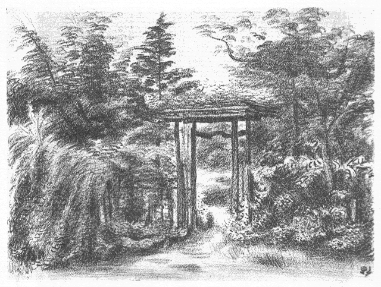

［＃ページの左右中央］

［＃改丁］
［＃ページの左右中央］
［＃改ページ］
白南風は送梅の風なり。白光にして雲霧昂騰し、時によりて些か小雨を雜ゆ。欝すれども而も既に輝き、陰濕漸くに霽れて、愈

に孟夏の青空を望む。その薫蒸するところ暑く、その蕩搖するところ、日に新にして流る。かの白榮と言ひ、白映と作すところのもの是也。蓋し又、此の白映の候に中りて、茲に我が歌興の煙霞と籠るところ多きを以て、採つて題名とす。もとより本集の歌品秋冬に尠く、春夏に多きもその故なり。
我が短歌に念持するところのもの、即ち古來の定型にして、他奇なし。ただ僅かに我が歌調を這個の中に築かむとするのみ。その自然の觀照に於ては、必ずしも名山大澤に之を索めず、居に從ひて選ぶ平々凡々の四圍に過ぎず。又、その生活感情の本とするところに於て、あながちに一時の世相に關せず、社會機構とも強ひて連工する無し。而も又、孤高を潔しとし、流行を斥くるにもあらず。ただ專ら短歌を短歌とし、自然を自然とし、我を亦我とするのみ。本分は我自ら知るべきなり。
惟ふに風騷いやしくもすべからず。かの光明に參じ、虚實交
にして莊嚴の祕密を識る、畢竟は此の我を觀、我を識るなり。一なる生命の根源に貫徹すべきのみ。乃ち、心地清明にして萬象おのづからに透映し、品格整齊して氣韻おのづからに生動せむ。純情にして簡朴なる、幽玄にして富贍なる、情意臻つて詞華之に順じ、境涯極に入つて象徴の香氣一に鐘る。一首は遂に一首にして亦生死の道なり。質實にして強靱ならされば得べからず。
又、惟ふに、神工にして成るものは稀なり。我が如きは、ただに玄微に玄微を搜ね、一音に一音を積み、而も鈍根にして未だ全く達するところを知らず。ただ好むところに殉じ、時に隨ひて行ふのみ。苦樂もと一なり。靈感は安易にして俟つべきにあらず。ただ日常にありて忘れざるべきを思ふ。精錬の道にして、初めて成就すべき業ならむか。恭謙ならざれば到り難し。
『白南風』一卷、もとより屑々の歌集にして、何らの氣に負ふべきものなし。日光・月色・風塵・草卉・魚・鳥の諸相、季節と生活、單にただ一々の歌品を以て、偶ま同好にして渾厚の士の清鑒に供へむとするのみ。言説すべきにあらず。
白秋識
［＃改丁］
［＃ページの左右中央］
口繪 中垣（世田ヶ谷時代） 山本鼎
裝幀 北原白秋
［＃改丁］
［＃ページの左右中央］
［＃改ページ］
［＃ページの左右中央］
大正十五年の、谷中天王寺墓畔に於ける生活に由る。新舊作合せて、短歌二百五拾貳首、長歌一篇。墓畔吟なれども必ずしも哀傷せず、世は樂しければなり。
［＃改丁］
［＃ページの左右中央］
［＃改ページ］
移り來てまだ住みつかず白藤のこの垂り房もみじかかりけり
厨戸のとのもの
小米花闌けにけり
衣干したり子らがさごろも
春まひる
眞正面の塔の照りしらむ
廻縁高うしてしづかなる土
塔や五重の
端反うつくしき
春晝にしてうかぶ白雲
音きざむ珠數屋が

の板びさし椎の
古葉のつみて久しき
春まひる隣に聽きてひそけさよ珠數みがく子らが
息吹ためつつ
木蘭は花の
立枝の影濃くて
表にほへりいちじろき照り
木蘭の花立ちひらく春日すらひめもすや人の
珠磨きする
さしなみの隣につづる珠の緒の
現なりけに春はかそけさ
春過ぎて夏來にけりとおもほゆる
大藤棚のながき藤浪
墓地前は石屋が軒をうづみてし
白雲木の花もをはりぬ
動物園所見
鷺
白鷺はくちばし
黝しうつぶくとうしろしみみにそよぐ
冠毛
槇もやや光る葉がひを
秀に
佇ちて青鷺の群のなにかけうとさ
鶴
鶴の巣と松の根方に敷く藁は
今朝さやさやし
新の
麥稈
松の花あかる
日竝を巣に群れて丹頂の雛は早やあらはなり
珠鷄
脊に負ひて霰小紋の
兩つばさほろほろ
鳥は聲ふくむ
鷄
珠鷄は
頬の瘤赤し片寄りにみな横向くとただほろほろに
ほろほろと啼く
珠鷄のこゑきけば夕日ごもりになりにたらしも
夕かげの砂掻きあますくくみごゑほろほろ
鳥の連れうごき來る
前廂ふかきこの家を
門庭は日の照りあかり若葉かへるで
石のつま
濕らふ見れば藍微塵
檀の花のちりて時あり
若葉して日射明れどこの空や朝より
煤のきらひふりつつ
根府川石やいまは日ざしも夏まけて板屋かへでの若葉映ろふ
石の
面にむらがる羽蟻音立てて
香は時
經ちし
春蘭の花
庭石にささとむらがるひとときは
柔き羽蟻もいきほひにけり
うちあがり羽蟻かがよふ若葉木の
暮合の空をいつくしみをる
靄ごめに萠えてうづまくむらわかば墓地の
空こそ照りあかりたれ
日はすでに照りかがやかし若葉木や東に塔のつまぞ
反りたる
瑞若葉紅の
扇骨木は日の照りを躑躅まじらひ花かとも見ゆ
角吹きてうつら添ひ
來る荷かつぎの夕ごゑながし
扇骨木生垣
父と母
夕安らけく附かすなり
扇骨木もえたつ墓地の霞を
佛にはかかる
和をと
宣らせこそなどか
愛しき光る若葉
若葉陰しみみにまとふ
蟆子の羽の眼にかゆきからわれは掻くなり
椎はもえ
樟は
闌けゆく若葉森この日移りのしづかなれこそ
石のべの躑躅の
蕊は長けれど
萎えつつ垂りぬ日の光沁み
義の叔母村上氏、齡七十にも垂んとして、何故にか我が叔父と離別して、今は流浪の身を、この同じ谷中のさる寺に養ふやに傳ふ。ほのかの便なれば、その寺の名すら知るに由なし。幼少の恩愛忘れがたく、暇ある毎にたづねありく。乃ちその歌。
寺おほき山はこの空寺ごとに桐の花咲きて匂ふこの空
花ふかむ桐の
木群のとのぐもりこもれる君が空もわかなく
山川とをさなかりける我さへやまさしく老いぬ人は知らずも
とのぐもり紫こもる桐のはな
暮合の空にけふもなりぬる
朝早やも咲きぬ咲きぬと掻きためて子がかかへ來る花筒の花
童よこは朝かげの花ならず夕かげに
葬りみ墓べの花
いづれよし花は
清しよ朝花と咲きも咲かずも露しげき花
朝なさな
求めてつつしむ墓の原に
新埴土のいろのつゆけさ
あさみどり若葉映らふこの墓や
埴のぬめりの何ぞつやめく
我は
誰ぞ

は曳きつつ
新墓の日に
殖ゆるすら朝眼樂しむ
新土に草の香ながれ風
疾し何思ふ我のうつくしみ
佇つ
朝東風の吹きひるがへす
朴の葉は葉おもてひろくすがしかりけり
吹きはらふ風さき
清にこの朝や靄は霽れゆきて天王寺の塔
この道や朝は葉づたふ
木しづくのしづけかりけり石にひびきて
若葉洩る朝の光は父われの麥稈帽に沁みて子が手に
子を連れて墓地は若葉の日のひかりしみじみと思ふすこやけき息
空しかり死にし
幽けき爲すなかり我は世に生きて
繁に喜ぶ
吹きちらふ物みな涼し
朝東風や石塔うへの
藍微塵の花
石のべは
三角柏の葉ごもりに蚊の聲ほそし立ちてゐにけり
犬
牽くと墓地をとめぐる朝涼は力張るらし草分きにけり
草間來て荒く息づく
面がまへブルドツグ
勢り手綱張り引く
若葉どき雲形定規かきいだき學生は行く燃ゆるその
眼眸
若葉森早や鳴き
勢ふ春蝉の若やぐ子らは思なけむか
朴の花白くむらがる夜明がたひむがしの空に
雷はとどろく
ひむがしに群れてかがよふしろき花
朴の
喬木ぞ木立してけれ
生けらくは生くるにしかず朴の木も
木高く群れて花ひらくなり
現身は生きて
朝間ぞすずしけれ愚かなりけり死にてむなしさ
光
發しその
清しさはかぎりなし
朴は
木高く白き
花群
鳩鳶雀うぐひす
矮
の
鷄この朝
聽けばいろいろの鳥
朝霧にほろこほろこと啼くこゑはここの
御寺の鳩にかもなも
［＃改丁］
［＃ページの左右中央］
［＃改ページ］
日に
黝む
紅の
扇骨木は
梅雨前と刈りそめにけり朝涼夕涼
何の木か
秀枝しづもる夜目にしてしろく
はさらと落つるその花
短夜はいまだ暗きに
小嵐や
朴の木の
梢を搖りぬまさしく
下葉うちたたと石うつ
清し花
朴の木の花の一夜落ちつつ
墓石に
朴の
散花日を經れば
縁朽ちにけり
一瓣一瓣
直土に
饐えつつ黄ばむ
朴の花晝は仔犬が掻きてゐにけり
石の
邊は
朴の
散花數ふえて
梅雨の日癖の雨期に入りにし
墓原は
小雨しめやぐ夜に嗅ぎて吾が堪へがてぬ大葉樫の花
花樫の香に立つきけばけんぽなし若葉ふきあかる山戀ひにけり
姥目樫かをす雨夜はつれなくてかしこかりけり墓地を拔けをり
香にはずむ樫の
木ぐれは夜ごもりに
苦木の花もふけにつらむか
花季は樫の
木ぐれを行きありく餓鬼もこそをれ眞夜ふけにけり
椎かしはむせぶここらの
雨夜月卵塔はわびし照りもかへさず
動物園近し
樫いとどにほふ眞闇となりにけり夜ふけくるひたつ
鳥獸のこゑ
聲呼ばふ墓地のかかりの
夕餉どき遊びあかねば子らは
愛しも
晝のごと青葉かがよふ
燈のおもて墓地のはひりもここだすずしさ
陸橋に
灯の
點く見れば夜靄立ち鶯谷の春も
去ぬめり
電柱の影うちかしぐ夕月夜
切通し上のあらくさのはな
塔の
端月明らけしひらら飛ぶ二つ蝙蝠が金の羽の裏
墓地前の花屋が花の
中明るみづみづし
燈の月の夜に見ゆ
月夜風しろう
幅だつ墓地わきを影はずみ來る母と子らはも
椎若葉けむる月夜のうつつにも
燈とぼす
か珠數かがりつつ
隈だちて
家廂ふかき月の夜もおもての墓地は照りまさりつつ
探海燈夜空薙ぎゆく墓地の森や女のこゑも月に立ち來る
うしみつと夜のふけゆけば草木みな
寢にしづむらしまして墓原
月よあはれ立ち蔽ふ雲のいやはてを螢火のごとも光りけるかなや
我のみや命ありと思ふ人なべて
常久に生くるものにあらなくに
わづかのみ
明る
木膚のさるすべり夜は深うして笑ひけらしも
黒南風の雲
斷れにけりこの夜ふけ月ほそく光り鷺と鶴のこゑ
眞夜中といよよしづもる夜の空の
梧桐のはなちりそめにけり
纎くのみ月の見え來る
短夜をまだ
最中なり落ちしきるもの
吾が觀るは
幽世ならず朴の葉に月出で方の黄の
火立なり
ほそき月夜ふけて光るひむがしは雲黒くしてあらはえの風
草いきれあつき日なかに汗は
滴り無縁の墓のうつら晝貌
日ざかりは
未だし
現しきもののつやほの肉色の晝貌のはな
そよろと風過ぎしとき
日中の晝貌の花ぞ内ら見せたる
石だたみ墓地の
十字路の日の
闌けに音とめにけり落つる
榎の實
うしろ肩大き佛ぞいましける月の光のながれたるかも
暮れにけり露佛の
螺髮くろぐろと月あかりしてうづだかき肩
墓原の木立の
奧所夜はふかし月の光のたたずみにけり
物の風か
氣に立ち來らし木の間洩る月の光のわななきにけり
我と同じ名の白秋といふ人の墓あり。若目田氏たり。明治十九年沒、勤王の志士なり。容貌性格我によく似たるものあるが如し。その嬬人菊池氏、吾が妻はまた菊子なり。因縁淺からず、ひとごとならず思へば、時をりに行きては墓を清め、花などをささげて、我と亦自ら慰む。
墓の座に鐵砲百合の粉は觸れて日の照はげし我はぬかづく
命かよふ我かとも思ふ朝じめりこの墓庭の青苔のいろ
青苔に
染みうつくしき
斑照りこの木洩れ日は幾時あらむ
この墓に日ざししづけくなりにけりきのふも來り永く
居りにき
蒸しつつも
現ならぬかこの墓地の日ざかりを靄の立ちてあはれさ
日のうちはなにかつやめく物のこゑ墓原ごもりひびきゐるなり
墓原や晝の霞の中あがる
紋白蝶の翅のちらと輝りたる
眼はあげて吾が附く道のけどほさよ
白南風の空をひとつ飛ぶ蝶
氣にふかき蝶のむつみや誰知らぬ墓うらの照りのすでに久しさ
紙のごとひらひらとこそありにけれ蝶の
双つぞ照り
合へりける
朝は見て息もつきあへずあら墓や力張りきる鐵砲百合の花
新土は朝にいつくし雨名殘いとどしくすがし鐵砲百合もよし
接待の泡盛は琉球の大甕なり
吾が
門の向ひの墓の夕月夜水うたせたるおしろいのはな
氣色だち
神輿練り
來るゆふぐれは
茅蜩のこゑも墓地にとほれり
水うちて月の
門邊となりにけり泡盛の
甕に柄杓添へ置く
市中は殘る暑さを樫の森や月あかうして向ひ墓原
墓原や石の
角目に照る月の光うち蒼み夜ただ
木しづく
萼のいろ雨に浮きたり。呼びそめぬ、ラヂオのニユース、フラン落ち、巴里暴動す、ポアンカレーまた世に出でむ。子らよよし、
冷麥食べむ、實山椒は
奴につけむ、月待ちがてら。
［＃改丁］
［＃ページの左右中央］
［＃改ページ］
墓原の木立に暑き蝉のこゑじんじんときこえ今日も久しき
この暑さまだし堪ふべし色褪せて
萼あぢさゐはほろほろの花
日のほてりはげしけれども
石の
間や細葉のつつじ株さびにけり
墓地の十字路にて
夜目ながら
老木の
榎洩る月のしろがねの網に狂ふものあり
展望
百日紅花いち早し眼はやりて向ひの墓地の今朝はすずしさ
風かよふ
百日紅の花見れば立秋のけはひ既にうごけり
中垣
對ひ葉の枝の
秀ごとの
紅き花
百日紅のちらら咲き
繼ぐ
門庭をこなたへ咲きて中垣に影ちらつかす
百日紅の花
つくつくはふしひとつ來てゐる夕つかた袖垣のうへの
百日紅の花
墓地
百日紅咲きつぐ道は吾が行きて利玄分骨の墓も涼しさ
百日紅下照る道の石だたみ子とひろひつつ蚊のこゑ暑し
百日紅滑ら
木肌のこぼれ日は花咲き足らひいとどしき搖れ
花あかき
百日紅の下にして子が立ちとまる影のみじかさ
白秋の墓にて
この墓をすがしと
思へば
差出咲く向ひの墓の
百日紅のはな
本ごころさびしき時はここに來てしじ聽きにけりつくつくはふしのこゑ
花つみて
一荷はのぼる馬ぐるま寛永寺坂に月は照りつつ
この月に佇む馬の尻向けて花屋が前は露しとどなり
入り廣き墓地のまともの宵月夜風とほじろし早き葉はちり
墓むらや月の光のながるればこちごちの石の濡れてはろけさ
本阿彌の露地出でて來れば狹霧立ち月晝のごとし墓の草原
芒の穗に小寥ひるがほをみなへし遊び
歩かな月夜よろしみ
雨のあし秋づきぬらし椎の葉の前には見えてここだみじかき
塗りづくゑ今朝ひえびえしペン軸に
蟷螂の眼はたたかれにけり
髓立ててこほろぎあゆむ疊には砂糖のこなも
灯に光り沁む
秋の夜は前の書棚の素硝子に煙草火赤し我が映るなり
目に黒く
木末かがよふ星月夜御院殿坂をひたぶるのぼる
雨たもつ椎の木ずゑの土用芽のかすかに星に光るならむか
小夜中は五重の塔のはしばしに影澄みにけり
小糠星屑
金輪際夜闇に
根生ふ姿なり五重の塔は立てりけるかも
立てりけり
星屑たぎる夜のくだち五重の塔は影くきやかに
青のつま
朱の五重の
塔の今
眞闇なり鷺のしき啼き
星月夜九輪の塔の空たかくうち透かし見ればかよふすぢ雲
朝顏にまじるみどりのかもじぐさここらの墓の
陰もうれしき
このあした露おびただしむきむきを穗に掻き垂れてゆらら犬蓼
この墓やゑのころぐさの穗は濡れてえんまこほろぎも露まみれなり
花に遊ぶ
うゑまぜてしをりよろしき秋ぐさの花のさかりを見て遊ぶなり
曼珠沙華了る
曼珠沙華莖立しろくなりにけりこの花むらも久しかりにし
彼岸ばな今はおどろと
卷鬚の
朱もしらけたり
長雨ふりにし
よちよちと立ちあゆむ子が白の帽月のひかりを搖りこぼしつつ
木蘭の濃き影見れば
良夜や月のひかりは庭にあかりぬ
竹柏の葉と
木蘭の葉の影交し月は隣の
家の上に來ぬ
家竝の高きアンテナ月の夜は光りまさりぬ濡れにけらしも
照る月の夜空にまよふあるかなき
薄翅かげろふの尾は引きにけり
板縁は月夜ふけつつ玻璃のかげ引きてゐにけり光る
幾線
總玻璃のとのもの月夜ふけにけりしろくかびろく庭石は見ゆ
石の
面に月の光は
冷えはてて音ひとつ無しただにその影
月夜ふかし光しづもる木々の
間に羽蟲かと思ふ影のちらつく
裏うがつ月の光となりにけり
黝き茂みのゆづり葉の垂り
一木櫨いよよ
照葉のことごとに
染み
出來にけり櫨はその葉に
觀つつあれば櫨の紅葉の一ひらちりまた二葉ちりぬ日の照る石に
石のべの櫨の落葉はよく掃きてまた眺め居り散りてたまるを
櫨紅葉下照る土はしめやぎて
帚目正しちる二葉三葉
はらら散る櫨は落葉ぞおもしろき
表火のごとく裏べ
寂びたる
石のべに櫨の落葉を吹きためてはららきし風も止みゐたりける
立襖は金泥をちらし、桔梗・薄・女郎花などを肉筆にて描きたり。
立襖もみぢにあかる
夕の
間を籠らふふかき日ざしなりける
［＃改丁］
［＃ページの左右中央］
［＃改ページ］
色鳥
菩提樹の落つる葉早し尾を曳きてめづらにつどふ色鳥の影
刈りこみて
吾庭はみ冬ちかきに刈りこみて躑躅のほそり目に立ちにけり
空寒し今は葉も無き菩提樹の
木膚かぐろく
伐口のいろ
落葉のあと
ひえびえし冬の日ざしとなりにける土に落葉の光れる見れば
かへるでの枝こまごまとありにけり葉なみふるひて今はしづけさ
まれまれに椎の葉にもつたまり
日も照りはかへさず
冷えまさるらし
椎の葉に冬の日のあるほどほどはうれしき珠數の
珠も磨るなり
錦木の時雨紅葉となりにけりふりみふらずみ日にくすみつつ
冬青の葉に走る
氷雨の音聽けば日のくれぐれはよく
彈くなり
目にたちて菊は白けど置く霜のむらさきの
凍み光こもれり
菊の香のこもりてぬくき冬日向蒲團の綿はゆたにうちつつ
墓原の
空地に繁きゑのこぐさ子ら踏み荒らし
地膚すら
出つ
墓地裏も
集ふ子供の影さむき冬の
薄日の照りとなりにき
墓地裏に騷ぐ子供のこゑきけばおほに
澱めり霙かも來む
朝しぐれ塔の庇のあをあをと木立はづれに見えて寒けさ
向う墓地冬木したしくなりにけりこちごちの靄は落葉焚くなり
上光るけだし榎の
乾葉ならむこまごまと溝をふりうづめたる
凍土になにか落葉の二葉三葉朝早き風にそそ走りつつ
冬の雨の石にひびかふ墓地の闇母と來る子は歩みとどめず
墓原を歸り來る子のこゑきけば
氷雨すさまじくふり亂るらし
をさな兒は軍歌うたひていさぎよし外套に靴に
氷雨はじき來る
枯枝に
白銀かがる月の夜は光ほそうして
冱えにけるかな
霜の
凍みいたもきびしき土のうへに南天の紅葉はらら散りたる
榊の實
黝ずむ觀れば袖垣の
結ひ目も
凍みぬ霜の
氣に立ち
墓原の花すてどころ霜ふかしつくづくと今朝は我もきびしき
霜ふかき花すてどころ目につきて南天の實は鈴の赤玉
山茶花の最寄りの日向しづけくてたまたま來れば子らつどひけり
童どち足踏しつつまだ
小さし山茶花あかく咲きにけるかな
たかだかと冬木の
朱實垂りにけりきびしくも
凍むか向ひ墓原
暮の靄子が背嚢の毛に
凍みてしろく粒だつ
寒到りけり
冬木原寒の靄ごもり行き消ゆる人あし見れば暮せまりつつ
暮れぎはの
寒の靄かかる
冬木原外套あかき子も
來るなり
冬すでに頬のみ燃え立つ雄の雉子の駈け走る見れば日もつまりけり
石のべの紫蘭の
莢に來て光る
蜻蛉の
翅も
小さうなりにけり
この墓に
凍みつつ白き山茶花の
蕊あざやけき
寒は來りぬ
墓原の遲き月夜の石だたみ山茶花ちらし止む
旋風あり
今朝も見る
閼伽の氷のさやけくて子はたたきゆく墓石ごとに
山茶花は末もつぼめど濃き
紅の
上凍くろしつひに開かず
もんもりと雪ふりつもる朝まだき
知音の墓は
求めて親しさ
雪は觀て早き
朝餐をたおたおと木ぶりをかしく搖り
出しづけさ
薄墨とけぶる低めの空にしてよにしづけきは
百日紅の雪
人踏みし雪の窪みに聲はしてなにかひもじき雀入りをり
さるすべり枝のぬめりにつむ雪の時しづれする聲のみしろし
むらさきのこもりしたしくなりにけり見てのみか居らむ薄き障子を
雪あかり早やすべしなし張りつよき白き障子に
燈は向けてあらむ
大君の
御腦の
［＃「御腦の」はママ］ニユースきこえ
來ぬ絶えて音なき霜夜しづもり
霜の
凝り堪へてこの夜もすわりたりラヂオのニユース聲せまりたり
霜くだる
今宵のラヂオおぎろなし心とどろくひと時
隔きに
霜の夜のラヂオのニユースはてにけり
灯は
明うしていたくしづけさ
縁の戸にひびく霜夜の玻璃の
罅ひたなげき
寢ず御寶我は
大君は神にしませばこの霜のとほる夜ふけは聽きておはさむ
冷えとほるほどろの霜や
冬青の葉の垂り葉の光ゆらぎ
止みたる
現神天皇にましましてなほし常無く
坐すがかしこさ
あらたまの年立ちかへる日は見えて神あがりましぬ霜のしろきに
健けく常は
坐さずも
大御命長く
坐せよと仰ぎしものを
ほがらけき
崇きたふとき
大御業つがせたまひき短かかりにき
石の
面にいやさむざむと日はかげりたづき知らずも生ける蟻匐ふ
冬木の根に
凍む土の張り乾きかうかうと響く道を行くなり
天王寺歌會即興、録二首
梅もどき籠に

しつつ用は無し來馴れし人の來れば待つなり
吾妹子が
してうれしき
落霜紅オンスコツプのくちばしよしも
寒夜、日暮里驛のベンチに相抱きて曉に發つ汽車を待つ母と十一二の女の兒ありき。子は雛妓の見習に上京中、肺患のため母の迎ひを受け歸郷せんとするなり。あはれなれば家に伴ひ一夜を送らしむ。後その子死にたる由の報知來る。
母と子のおもざし見れば寒き
燈にすべなしばたたきよく似たりけり
吹きさらしひびく霜夜にかきいだき母と子はありき
温みとるとて
女童は
繁に
咳き入る寒き夜を
小糠小星も風に冱えにき
ただにありき爐の火かきおこし寒むからむ
温もりてよく寢よとのみわれは
死にせりと母が書き
來し文見ればその子が
笑ひ力なかりし
墓原に風は吼えながら朝わたる月夜なりしか
白みそめにき
子にくるむ
衾そだたき
一夜いねずたづきなかりけむか人の親母は
この夜ごろ火に立ち騷ぎ止む
間なしかぎりなく寒く人はまづしさ
すさまじき夜の火なりしか墓地ぬけて曉の霜に身ぶるふ今は
霜いたり空は
濃青き夜の明けに筑波の山はくきやかに見つ
柿の
蔕黒くこごれる枝見ればみ冬はいたも晴つづくらし
深廂晝もをぐらき家の内に
灯はとぼしつつ春を待つわれは
とのぐもり
煤の
氣ふかく立ち舞へば
咽喉ゑごくして春もくるしさ
何か花にほふ
雨間の
木のくれを妻とし
歩くゆゑはしらずも
［＃改丁］
［＃ページの左右中央］
［＃改ページ］
［＃ページの左右中央］
昭和二年の晩春より同三年の初夏に至る馬込緑ヶ丘の生活に由る。新らしき文化住宅地緑ヶ丘の突端にある此の馬込の新居は、明朗にして簡素、月・霧・燈・火の夜景は亦九十九谷の名にそむかず、少くとも近代詩趣の一年なり。
［＃改丁］
［＃ページの左右中央］
［＃改ページ］
吾が
門は
通草咲きつぎ質素なり日にけに
透る
童らがこゑ
厨戸は夏いち早し水かけて雫したたる
蝦蛄のひと籠
この小さき鐘と撞木は前の主人の遺し置けるものなり
小さき鐘
撞木とりそへ
吊したりこの
家のはひりすがしとも見よ
小さき鐘掛けてすがしきこのはひり戸は
鎖しにけりそよぐ木の影
風そよぐヒマラヤ杉の
二三本はひりの庭は今朝もすずしさ
吾が
童鐘にとどかず
脚立よりのびあがりうつ
面仰向けて
戀しかる晝は待てどもうつ鐘のまたわづらはし人にこそよれ
誰待つと家居るならずおなじくも憂ふる人の
來よと
思ふのみ
まれびとか
或は來けらし軒鐘や音のさやかにふたつ鳴りたり
家垣の
築土のあやめ咲きにけり
童な手折り通りすがりを
あやめ咲く
築土に添へば
鴨跖草や隣もすずしふり亂る露
蟆子の
立口にかゆきか吾が
童夕ばえの頃は聲はずむめり
月はあれど夕立つ雲の
氣に見えてなにか
逸れたる蒸しかへしなり
日に
闌くる草の香
嗅げばこの崖や晝貌の咲く色もまじれり
晝貌は晝もあはれや
容貌清き
稚どちゐて草に坐りぬ
二人の子供は隆太郎と篁子なり
草生には出で入る子らが二人ゐて晝ふかきかなや大き星見ゆ
月のごと大き星晝の空にありウィンネッケよあはれ人は貧しさ
うち開くわが
屋は高しゆりの木のほづえに花も現れにけり
大き鳶たわたわと來て
過ぎるとき穗にあざやけき丹波栗の花
大き
今朝うちひらき朗らなり芝の
刈生に子は飛び
下りる
白き柵をどり越え來てわが太郎
這ひあがるこの朝づく日
梅雨ふかし薄ごもりに生みためて
鷄の卵の
光澤も
失せぬる
卵ひとつ生まずあはれと見つつゐし生みてありけり
鷄は草生に
半夏生早や近からし桐の葉に今朝ひびく雨を二階にて聽く
しやしやと來て
篠懸の葉をひるがへす青水無月の雨ぞ此の雨
斷層の青萱見れば吹きなびく
風竝しるしかがやきにけり
梧桐のふふめる花の穗に立てば二階も暑し
は
開け置く
日は
午なり靄たちこむる向う空にカキ色の氣球熱しきりたる
午の坂黄なるドレスののぼりゐて電柱の影が
彎みたり見ゆ
憤怒堪へつつのぼる我が歩み陸橋にかかり夏の富士見ゆ
陽炎の搖りあふる見れば
朱の桁や鐵橋はいまだ架け了へずけり
かうかうと鐵の鋲うつ子ら見れば
朱の鐵橋は雲に響けり
蒸す雲の
立雲思へば息の緒に息こらへ立つ
憤怒の神
こまごまと
茱萸の
鈴花砂利に散りあはれなるかなや照りのはげしさ
日は暑しのぼり
險しき坂なかば
築石垣のこほろぎのこゑ
白榮の暑き日でりの竹煮ぐさ粉にふきいでていきれぬるかも
馬込盆地の暑き
小峽にうちひびき
蛙は啼けり草いきれ立ち
聲
合す草田のかはづ晝
闌けて
間を啼きしぶれ深むものあり
末つひに人の命は長からじ眼には
笑みつつ肩喘ぎけり
水さしに水はあらぬをほそぼそと吸ひほけにけり透きとほるもの
かくしつつ人の命は過ぎなむやちかぢかと眼を寄せて見むとす
眼力かくのごとくば眞夏さらずあはれほそぼそと人は死にせむ
山なすここだくの
書ほこりつもり暑き日なかを息繼げり君は
生きざらむ命思はず仰ぎ寢て手は
拱みにけり敢て息
繼ぎ
下冷えて
額ににじむ薄ら汗おもほえばしじに君も生きにき
二階に咳ひびきけりかいかがみ今はすべしなし靴の紐むすぶ
おもての光くわうくわうと流れたり強ひてまともに眼は向けて
出つ
いたいたし脚のほそりの眼をさらず我は踏みありく光る
直土
眞夏過ぎ
簾うごかす
廂合の朝の
涼かぜを君はたのめぬ
うちそよぎ風吹きかよふゆりの葉に朝は朝日の透きてすずしさ
廣き葉の
半は黄なる
本つ
枝に早や風涼しうちかがむ猫
ひとすぢに夏野よこぎる道しろしおのづからなる歩みつづけむ
道のべの
車前草硬くなりにけり
眞日明うして群るる子鴉
風ひびく
葉廣篠懸諸枝立ちあざやけきさ
青の
火立騰れり
ポプラ葉のかがよふ見れば涼風立ちさながらに日の光るさざなみ
吹く風の幅は揉みぬく栗の葉の葉あひに青く
毬の群れたる
夕かげのおもてに移る合歡の花ほのかに君もねむりたまひぬ
いとどしき殘暑の照りとなりにける
繁立ほそきその赤松に
赤松の
直立つ見ればあきらけく
正面の西日
木膚照らせり
夕かげはにほひこめつつ靄ごめに疊みよろしき松が枝の笠
赤松の
一木が
撓る向う丘夕かげの中に風の吹きしく
夕早く風にさはめく赤松の林のほそみ見るがすずしさ
み寺には百日紅の
閑かなり洗足の池の夏も過ぎたる
池のべの
楊が
傍に咲きあかる
漆の花はまだあはれなり
現世の
漆の花のひと木立臈たくしろき月空にあり
みなぎらふ夏の光も過ぎにけりわが
對ふ池の薄らさざなみ
殘暑の日ざし
冷め
來るさざら波ただひとりなる舟は
遣るなり
竹煮草今は穗に垂りしづかなり
鶸茶の
莢の
朱のいろの液
隣りびと W. Timacus の
厨には
はうち開きフライパンが見ゆ
露つけて今朝すばらしく
眞青なりうしのしつぺいの放射線の
芒
露草は朝露しげし今朝咲きて涼しかるらし黄の
小蕊立ち
松の
木間栗の花ぶさ返り咲き日光室に日の光る見ゆ
朝めざめ
清にすがしき戸は
開けてヒマラヤ杉は大粒の霧
吾が起きてただに
瞰下す
門の戸を濃霧しづもり
谷地はこもりぬ
森と言へば
叢立つ霧のこちごちに
氣高く厚く
壘立てたる
朝月夜いまだも夜霧とどこほりひむがしの丘に日あし立ちたる
高き屋に光射し滿つ我が丘を
明暗の谷の
街ぞとどろく
ちかきヒマラヤ杉の
秀は搖れて光り來にけり月出づる方
わが
門はヒマラヤ杉の朝月夜影がそよげり
鋪石のうへに
［＃改丁］
［＃ページの左右中央］
［＃改ページ］
馬込は谷おほき里、とりよろふ丘の
岬々、朝に夜に狹霧立ち立つ。高
や東に開き、西をあけ、南もあけて、うち透かす賑ふ
灯、
山中のみ湯のさまかも、月さへも紫明る。霧はおもしろ。
女童が
 毛
毛にやどる露のたま月のありかは雲の
上にして
木の間洩る
谷地の
灯あしの
線引きて
蛙が啼けば子は
寢ぬるもの
ひとり行く
ひとり行く歩みとどめて眺めけり水芋の葉に月の宿れる
おのづから歩みはとまる道すがら芋の
立葉のことごとの露
美童に遇ふ
月を
指す幼兒ゆゑにあはれとはいみじかりけることを言ひつる
珠ごと露の
立葉に月は照り清き
童の
面あげて
佇つ
犬の
吠近き月夜の
野路の霧誰かころろと歩みかへしつ
清らけき母を思へば月の
面に微塵の氷吹きつくる影
白鷺の月に見えつつ飛ぶ影は
正眼ながらに霧しまきつつ
母を思ふ
現の聲や夜風の硝子戸たたき消ゆる
疾足
秋ちかき月の夜ごろは雲と言へばしろく流れて片明りつつ
涼しさははてなかるらし眞木山や隣る月夜の
小竹の葉にして
影いくつ涼し月夜や古木の梅つつじ藤錦木ほそき孟宗
梨の棚あをきすはえに照る月の光しづもり
鳥屋の戸も見ゆ
草ごもるかけろ探すと子らは出て月にわけをり薄き月夜に
掻きわけて涼しきものは
篶の
秀や月の夜ごろの山いもの花
篶の葉に月の光は遊べども吾が
利心よいまだ
和まず
咲くものはつひにあはれよ
月夜照り山いもの蔓にそよぐ涼風
おもしろの月の夜ごろや草に居て眼に入る物の風そよぐなり
かぎろひの
夕月映の下びにはすでに暮れたる木の群が見ゆ
月の照り匂だち
來る雲ながら木原が上は色のさむけさ
月の
映こもりてしろき夜の靄に煙かと思ふ色ぞうごける
遠じろくうごくけむりのふたながれ月の光も渡りつつあり
ひと時は夕月映にめづらしき
遠近の谷の早き
燈火
馬込は霧多ければ圓月もまた紫に見ゆることあり、光悦の屏風と思ひ合せて
中明る紫の月丘にあり秋ぐさの花の亂れたるかも
桔梗の月にさやけき松が根はひとりかがむにしくものぞなき
洩れいづる月の斜光となりにけり雨は盆地の
灯をたたきつつ
匂だち
濕らふ雲の影見れば小夜ふけと月もふけて
和ぎなむ
はるばるとわたる月夜のうろこ雲
現しき母の子をかかへ
佇つ
月夜よし遠き梢に
下り疊む
白木綿雲は雪のごと見ゆ
月高し
谷地の夜霧に
尖り
出て急勾配の
濃小豆の屋根
しゆうしゆうと夜霧ながれてありにけり月に光るは玻璃の屋根のみ
二階の和室にて
硝子
月に開きて坐りけりつくゑにうつる壺と筆の影
筆立のとりどりの影しづかなり月夜ふけつつひとり坐るに
塵ひとつ月に留めじと思ふなり
黝朱の
塗の
清の
文机
ふけつくし月の騷ぎも過ぎにけり
梧桐の葉に今は澄みたる
つくづくと觀る月ならし夜の遲き光に妻が
面向けたる
目は
盲ひて
笑かすかにおはすなり月のひかりの照らす
面白
［＃改丁］
［＃ページの左右中央］
［＃改ページ］
秋さびしもののともしさひと本の野稗の垂穗瓶にさしたり 千樫
秋の空ふかみゆくらし瓶にさす草稗の穗のさびたる見れば 同
秋ふけぬ物の葉ずゑに立つ
蟆子のかそけき光ただに思はむ
稗草の
穗向にちらふ
蟆子のかげ驚きて思ふうらさびにけり
さびさびて今は光らぬ野稗の穗親しかりにし人も死にせり
野稗の穗
瓶にさしつつうらさぶしかくのごとくや人の坐りし
吾が
門は電柱の根に夕日さしうらがれぐさの穗が
映るなり
§
草の穗に移ろひはやき日のあたりこのごろはわれも病みやすくして
家にこもりて
皇禮砲とどろと響き
雨間なり柿のもみぢがうつくしく見ゆ
航空船黄にうかび來てとどろけりなにかはさむき日の曇りなり
はらら飛ぶ
小禽あはれと觀つつゐて霜の葉おほき木々に驚く
とのぐもり羽ばたきとよむ飛行機は向ふ時雨に今は
列竝む
吾が庭は白き小菊の錢菊のただに
明りて朝の濃き霜
菊の花酢にひたしつつうらさぶしかくしつつこそ秋も過ぎなむ
白菊の青み
冱え
來る夜の寒さ百燭のあかり近く寄せ置く
御會式の萬燈あかく山を去り
蹤きゆける太郎この夜歸らず
子を呼べばまばたきすもよこの夜さり
谷地の
灯あしが
毛なし見ゆ
父われの大き靴はき
童なり萬燈に
蹤きていづち向き行く
わが聽くは小さき足音ひとつのみ夜は暗くして群の足音
灯は多しもとも大きくみづみづし紫の
燭は映畫館ならむ
吾が庭は若木錦木もみぢして椎の根方も照りとほり見ゆ
光無き冬の入日の
朱のおぼろ西の曇りのあやにしづけさ
神無月
合歡の
老木のもみぢ葉のすでにわびしく濡れわたるめり
朝にけに時雨なづさふ雜木立
最寄りの丘も
染みて來にける
十方に放つ
黄金の日あしなり欅の寒き冬の木のうへ
群禽の
木末にきほふひとなだれ
遠のながめも
寂びあまりけり
み冬づく丘の
家居に立つけぶり湯氣おほけれやあたたかく見ゆ
目にたのむ寒き
木の
間の赤屋根も煙見せつついつか暮れたり
暮れにけり師走の
谷地の
家びさしにこごりて白き
寒靄のいろ
こま
形の
銀杏の
散葉黄に
冱えてその向き向きを霜のよろしさ
土に
凍みて今朝の落葉はおびただし
木履つつかけそこら掃きゐる
黄なる葉と
褐色の葉とちりにけり黄なる
銀杏がまれにこまかさ
枯れつつし色に目だたぬ雜木やま向ひは霜の晴れにたるらし
立ちほそり寒き木ゆゑに
裸木や
霜朝の空に末光るなり
冬の日の光
冱えたつ
淺葱は添ひゆく子らの
頬に映るらし
ほろほろと行くにくづるる
崖の土こごりきびしき霜ぞ立ちたる
男の
童父の杖とり
犇とうつ霜柱しろし此の霜ばしら
こごり立ちしづけかりしかひた乾く
地膚はららかし踏む霜ばしら
隆太郎を砧村の成城學園に入學せしむべく、先づ行きて參觀す。
濃き霜の
凍みてさやけき冬菜畑に朝の響の來つつしづけさ
霜いたる冬の玉菜は藁しべにきびしく
結ひぬその株ごとに
朝凍の大野の霜となりにけり早やあざやかに冬菜積みたる
清々に根引く冬菜は野に積みて置き足らはしぬ横山のごと
水のべに洗ふ
大根をさわさわに見つつわが行くしろき
大根を
み冬づくくぬぎ林に子らと來て落葉踏みたつる音のひもじさ
くぬぎ原ぬけつつとほる貸家の庭霜くづれ黒し落葉まじり踏む
子を負ひて切通しゆく影寒しこのあたり低き雜木ひと山
風後の冬の日あしにありにけり
通草の
散葉いまだ青きに
このとぼそ晝も
鎖しつつ寒けさよ日は光りつつ
一木白樺
風すさぶ
一木白樺月夜には影いさぎよし葉竝ふるひぬ
草くづと
土糞焚きつぐこの日ぐれ五六頭は居らし牛の立ちつつ
寒の月響く夜空となりにけりしろき梢の
繁み
立つ仰げば
冬木照る月夜すがらやまれまれは山片附きて走る雹あり
白くのみ月にかがやくひと束は紫うすき根の
蓮らし
白菜はみながら白し月の夜と霜の光にうづだかく積む
白き菜と紫うすき根の
蓮冬はさやかに厨戸にあり
唐畫風
白菜の霜にかがよふ夜明け方
歩き
歩きて鳩は
眼聰さ
しらしらと朝行く鷺の影見れば高くは飛ばず寒き水の田
下り盡す
一夜の霜やこの
曉をほろんちょちょちょと澄む鳥のこゑ
かげ寒き池の
水面やつれづれと
家鴨およげり
鴛鴦を前に
尻あげて水に
竝みゆく
水禽のちらら
後掻くふりの寒けさ
畑なぞへ冬の砂利道行きのぼる柚子色の帽は悲しきごとし
夕凍にむらさきしきぶ
數光り電線は切れて橋に垂れたり
冬の道くだりてのぼる木原山射的の音がひどく確かさ
冬の土ひた乾くから
小胸張りかうかうと行く小學生なり
とまり木にからみて
朱き鳥瓜毛は荒しもよ剥製の栗鼠
頤ひげをくひ
反らしつつ愚かなり剥製の栗鼠を
氷雨にぞ置く
冬ちかき一望の
寂映りゐる剥製の栗鼠の大き眼の玻璃
寂しくも遊ぶ
暇は無き我を剥製の栗鼠はしづけくあるらし
秋冬を心むなしき夕ながめ剥製の栗鼠は眼の光るあはれ
いつまでか長き日あしぞ炎
立ち冬木にたぎる寒空のいろ
寒の土に
佇ちつくしつつかそけさよ冬は螢も飛ばぬものをよ
末ほそく
下枝引き張るたけ高きヒマラヤ杉は冬によき杉
さんさんとヒマラヤ杉を洩る月の
後夜たちにけり冬に立つ影
わらべどち憎む
境の
切崖は陸橋がかかり椿花むら
花深く
紅き
椿や
下枝さへ光るばかりを上にも上にも
小學生ら聲
放りあげて行きにけり椿の花がひたあかきなり
花ふかき椿はすごしつらつらと出て來てはくぐる子らが足竝
老椿下照る道の春の泥洗足の池はけだしこの奧
雪つもる
の
内らのゆふつかた
火映親し誰か爐に
居る
雪しづりけはひ
幽けき夜の
間にも紅毛びとは火にか樂しむ
マントルピース
火立華やぐかたへには金髮のふさ
透りゆらげり
穩しき
笑なるかも片頬照り爐に寄る母の何か言ひつる
老びとの
紅き
上衣はをさなくて
灯にものがなし毛絲編みをる
咲きあかる花かあらしも木原山松の木のまのしろきを見れば
櫻咲き馬込の谷もしづかなり霞むかぎりがしろくのみ見ゆ
向丘の木のまに見ゆる赤がはら家古風にして春日おだやか
本門寺の裏山道ののぼりおり松の木のまの山ざくら花
花曇源藏原の夕影にみづみづし
燈のひかりいでたる
九歳にて變質の子なり。ひそかに訪れてやまず。
をさなきはをさなかれよと
數花の
通草の
門に立たせつるかな
女童は心くるへり崖の
端のほのかに
萎ふ晝貌の花
晝貌やここだかなしき
女童を日ざかりの
門に隔てさぶしき
うち見には
童なれども
女子やまさなきことも美しみ
思ふ
つきほなくかなしかるかなかがなべて年のへだたりは
三十あまり
五つ
言ふことはねびてきこゆれ
女童や母を離れてなどか死にせむ
夏衣の
生絹が裾の
高踵なんぞ
童が少女さびする
女童は水に
戲ゆるしろがねの
鱗のごとかなしかりけり
晝餉には庭の芝生にぢかに坐りわが
眼先のかきつばたの花
飯粒に沁みつつ白き日のひかり子ら
食みあまし父われが
食む
消え易き花火思へば
短夜は玉とうちあげる青き
蓋
水の
上や夏は花火の宵々にひかる
投網をかいひろげ
消つ
短夜の馬込なりしか梟と
木菟のこゑの
互みにはして
子鴉は嘴黄なり
車前草や穗に立つ道の
埃踏みつつ
五年の後
馬込緑ヶ丘、この
門のヒマラヤ杉、來て見れば
木高くなりぬ。夜寒にも
燈はとぼりをり。人や來て住みつきたらし、わがごとやこもり息づく。
星月夜、狹霧立ち立つ、この家の、鐘と撞木がいよなつかしも。
§
秀に搖れていよよ
木高き影見れば
下枝もふかく曳きにけるかな
たけ高きヒマラヤ杉の星月夜二階の
に
灯のうごく見ゆ
§
門庭よ冬の夜寒も
燈は洩れて住みつきたらし
人香こもれり
この門よ
槇も
通草も目立たずてすがしかりしか雨つづりつつ
［＃改丁］
［＃ページの左右中央］
［＃改ページ］
［＃ページの左右中央］
昭和三年初夏より同じく六年の同じ季節に至る、四年間の、世田ヶ谷若林の生活に由る。尤も三年には歌作乏し。家は街道にのぞみ、囂音と塵埃と筆硯の繋鎖とに苦しめらる。しかれども邸内廣く、花木多く、奧の庭やや古風にして四時眼を樂ましむ。日常之に添ひ、風韻幽かに成る。
［＃改丁］
［＃ページの左右中央］
［＃改ページ］
大君、日の本の若き大君、
神ながら朗らけき
現人神。青空やかぎりなき、
國土やゆるぎなき。萬づ世の
皇統、
皇孫や天津日繼。ああ我が
天皇。大君、道の大君、大稜威。今こそは依り立たせ、けふこそは照り立たせ。
高御座輝き滿つ、日の
御座ただ照り滿つ。御劍や御光添ひ、
御璽やいや榮えに、
數多の御鏡や勾玉や、さやさやし
御茵や
［＃「御茵や」は底本では「御菌や」］、照り足らはせ。大君、我が大君、
現つ
神、神ゆゑに、雲の
上の照る日の光
釆りてますかも。
反歌
黄櫨染の
大御衣明く照り立たし
彌さやさやに若き大君
かくばかり
楓ありとは知らざりき
繼ぎ
繼ぎて染む秋を驚く
この庭に
一木二木と照らひたるかへるで紅葉時了りけり
鷄頭はつぶさに黒き
種子ながら
鷄冠の
紅よ燃えつきずけり
わが背戸は食用菊の黄の花の殘りとぼしく霜の
滴りつつ
石庭に冬の日のさしあらはなりまだ
凍みきらぬ青苔のいろ
庭苔に木の根影ひく朝の
間は冬も
幽かに美しくして
木のま洩る冬の朝日のすがしくて時ならぬ土のかをり息づく
うすうすと朝日さし來る椎の根に心寄せつつ冬はこもれり
檜葉垣の
外とほりゆく影ながら早や親しもよ冬は透き見ゆ
木
の
一木の
表闌けにけりみ冬ながらに日ざしもちつつ
木の葉洩れ日見つつ思ふなり濡石に出でて
歩く蟻ゐず
向ひ見る冬の梢となりにけり細みつくして眺めまさりぬ
晝餉過ぎいくら
經たぬを
木群には早やしろじろとかかる夕霧
この日ごろ近き
空地に來て
騷ぐ軍馬ありけり風の
夜寒を
軍馬の群この夜とどとし來て居りと思ふだによしを千葉聯隊の馬
觀兵式の豫行演習に朝出でて夜は
寢に還る軍馬の群らし
§
山茶花や井の水
汲むと
來る兵のバケツ音立てぬその
凍土に
兵士來て井の水汲むと我が太郎眼もまじろがず山茶花の午後を
§
夕凍を子らと見に
出るとなり原軍馬は群れて還りゐにけり
夜に還り朝
發つ馬の草床は風吹きぬけて置く屋根も無し
濃霜置き軍馬入り臥す隣原夜はふかくして
騷ぎぬるかも
霜は滿ち軍馬のたむろしづもらず糠星の
數のただにきらめく
夜のほどろ
騷ぎ立ちゆく音すなり觀兵式に
列なる馬なり
大君のけふみそなはす軍馬なれ
蹄の音もさやかに
發つべし
§
駒
竝めて兵還り來ず代々木よりただち本隊へ駈けにたるらし
隣の原また
騷ぐなし風のみぞ夜どほし寒き空に地にきこゆ
夜はしげく軍馬
寢に來し草の原馬臭き肌のこもりかなしも
寢ねがてぬ軍馬なりしか夜に聽きてなにか心に觸るるものありき
その後の夜
常ならず物の
幽けくきこえゐて今宵の雲は
凍みこごるなり
日おもては
雜木にこもる霜の
氣の照りあたたかし春めきしかも
輝かでにほふ
垣内の芝生には冬の日ざしぞ
和ぎたまりたる
青鷺にしら鷺まじりあはれなり氷のひびの水に薄きを
圦もやや角ぐむ葦のさ
青の芽に電球がひとつ流れ寄りつつ
疊はる
木群のうしろ明るめり月の光の立ちそめにけり
硝子戸にのぼりて黄なる圓き月瑜伽師地論を讀みつぐ我は
破れはててむなしき
鳥屋の葡萄棚葡萄の房は垂りそめにけり
むべの棚いまだ青けどひえびえと日ざしとほりて風うごくなり
もちの葉の葉越しに見ゆるわくら葉は櫻なるらしよくそよぎつつ
木のうれにふけつつ澱む夜の曇り
甜瓜のごとき月黄ばみ在り
高々とのうぜんかづら咲きにけりただにあはれと觀つつ籠らむ
家垣のひともと
木槿光
發し開くただちを
土埃來る
もちの木は葉につむ
埃いちじるしじりじりと照る眞日の光を
街道の
地響しげき日のさかり鏡にうごく木はちすの花
書齋
の
上に垂りつつそよぐ蔦かづら涼風たちて實の綴り
初む
吾が宿の萩の中垣荒れはてぬいきれて暑き男ぐさの花
青萱の野萱にまじるさざれ萩この朝涼をすでに綴れり
颱風の
逸れつつしげきあふり雨白萩の花のしとど濡れたる
夕ほてりこのごろつづく芝生には木の椅子が
二つ猫萩のはな
日時計の夕かげ長くなりにけり宮城野萩の
叢咲の花
からかさもみ、一名高野槇、或は金松
雨のふり觀の
幽けくて
眞深なりからかさもみのしだり緒の笠
高野槇雨こまかなり秋もややけしきだちつつ
冷えまさるらし
田中智學、高村光雲兩翁、竝びに國醇會の人々を迎へて
芝庭の日向最寄りにくむ酒の
老よろしもよ小春過ぎの雲
日向べは木々の紅葉の過ぎぬれどまだあたたかし
莚敷き
竝む
わが家は煙突の
壁の蔦かづら日ましに染みて煙立てにけり
わが
は日向の
壁の鍵の手を
常春藤もみでて照りかへしつつ
書齋
わが家はポウチの棚の
郁子の實のこよなく熟れて冬來りける
とり
食めば
核は多けど齒にしみてすがすがしかも
郁子の實のつゆ
こもごもに
郁子と
通草をとり
食みて
郁子がよしちふこの子があはれ
郁子食むとひたぶるの子らやうちすすりしじに
核吐き眼もまじろがず
おほかたに遊び足りたり夜ふけたり子らよ
寢なむまた明日もあらむ
多摩川に砂利あぐる音の
風向をひと日きこえて
寒あけずいまだ
日につのる寒さもちこたへ
諸の葉のかがやける見れば椎よ冬の葉
思ひ
屈しぬくき日あたり出て見ればかへるでの根に雪ぞ光れる
かがみゐて寒き日向や
下心ふかく
侮づる子らに
隙與へけり
淡々と火の見の
灯あしたちにけりすぐろにほそき木のこずゑより
１．十一月五日深更、「赤い鳥童謠集」序成る
思ひ
繼ぎ長きはしがき
了へにけり夜ふけかすかに吠ゆるものあり
かんとうちて半鐘の音とめにけり火の消え方は夜も
凍みるらむ
霜の空透きとほり青しこの
曉や月は落ちつつ松
二木見ゆ
２．十二月十三日夜より十四日拂曉に至る
夜ふけて寒くひびかふ音ながら沿線に住めばけだしよろしき
ひそかに吾が本質をうたがはず大禪寺柿に
刄を
すかとあてぬ
ゐろり火に蛇經を讀めばおもしろく身うちゆるがして走るリズムあり
夜はふけぬしゆんしゆんとして煮こごれる林檎のつゆの
紅き
酢醤
野砲隊とほりしがとどろきやまずいづべの霜に
闌けにつつあらむ
しみしみと澄みて來にけりまさしくもしづかに霜に聽くべかるらし
絹笠に黒く粒だつ蠅ながらオスラムの熱冬を光れり
冬の夜は物の正しき影すらやただにすさまじく
燈が
明るのみ
幼さびかくて我あれやつゆだにも
童ごころはけだしとほらず
冬の蠅そこら遊びし小夜ふけて居るものは無し
凍みて來らしも
燈は
明し大藏經のうしろゆく鼠の尻尾影うごくなり
常ながらおもて通るは
夜發ちして多摩よりのぼる
牛車かもあはれ
あけがたはいとどしづもる野の霜をひたすらや赤き電氣爐の息
遊行して
障り無してふ日はあらずただになづみぬうちこもりつつ
武藏野に紫つづる蘇枋の
果わが
縛著は子ゆゑきびしき
前の夫人と別れたる頃のこと、及び挽歌
椎が根に素燒の鉢の三つ二つ見に寄るべくも花はあらざりき
家廂に及ぶ椎が枝そこらくを明りたのめて伐りし椎が
枝
縁の
端に日ざし頼めて見やる眼も力なかりけむか土をのみ君は
庭土にちりて久しき椎の花なげきこまかに君も堪へにき
さきのちひさ篠の子篠の子の
秀の
上にのぼり露は光りき
夜のほどろいつか寢入れるその頬には涙ながれて薄き髮の毛
鹽原の一夜
いついつとえは
諦めずありけらし
消なば
消ぬかに末はなんぬる
木原山日暮れて寒き人あしの中のひとつの音絶えにけり
挽歌
十二三頭馬乘り入れて來りけりこの

を見よと少年騎馬隊
木は冬によろしき門庭を
馬糞火氣立ち騎馬は足踏む
息しろく凛々しかるかも少年騎馬隊馬上敬禮の眼を向けにけり
夕凍を
門出づる子ら馬上なり早や
疾駈に駈けつつゆくらし
門庭に
馬糞火氣立ち日は寒しすべなあはれとわれは掃きをり
この月を
小竹の
葉叢に影さして飛びちらふ見れば雪はおもしろ
寢帽つけてまだ讀む月の
午後しきり粉雪のけはひさらめく
三月五日夜
樂しみと心こめゆく夜のさなか出で入るふかき息づきを吾れは
ほれぼれとおのれ遊ぶとたのたのと磨る墨のいろはひとり吾がもの
磨る墨やにじむ光の粒だちのにほひこまやかにのりて來るもの
樂しみとひとり
恍れつつ磨る墨はむべこまやかにとろりとあるべし
草假名は心ゆくなり
細がきの
面相に書けばなほとおもしろ
落ちてけりあはれよと見るその棚の
通草とどとして積む雪とともに
雪のいろみなぎる見れば日の暮は下沈みつつよく積みにけり
寢室にて
玻璃の
棧の
隙吹き吹きたまる
雪片しろし小夜ふけてける
夜はふかし
隙間吹き入る雪の粉の今は
小床に飛び亂れ積む
夜のふけの鏡にうつり幽かなり雪片は白しつもりつつ澄む
水の手にさけぶ野鴨の數きけばねもごろならず月夜きびしき
［＃改丁］
［＃ページの左右中央］
［＃改ページ］
吾が
門のおもての細き
美篶原みすずは寒しよくしをりつつ
美篶原風の
戲えのよく見えて春早き朝の日の
當りなり
目にしげき風の
戲えは寒けれど
美篶が原よ春は來にけり
美篶吹き
篠吹く風の
朝東風は目もすまにして音のさやけさ
春と言へどいまだ
篠吹く風さきに
楊は枯れて影あらはなり
風の吼え聽きつつくだつこの夜さり玻璃戸にうつり吾が顏は見ゆ
風の夜は暗くおぎろなし降るがごとき赤き棗を幻覺すわれは
しばしばも息吹きやすむ
風息のこのけぶかさは
冱えかへるなり
夜の風の息づきの
間や
下り沈む
蘭鑄の尾鰭ひらきゆるがず
風の音すさぶこの夜の篠藪をほそくとほりて眞澄むこゑ何
うち向ふ春なりながら
美篶吹き夜をしきり吹く風のするどさ
家垣を
一夜あらしの吹き落す椿のあかき花もあらむあはれ
庭の木々にすさぶ夜風はさりながら咲きつつやあらむそのあるものは
この闇の木々吹きひらく夜風には少くも
明き
燈を向けてあらむ
オスラム電球ひたと見つめてゐたりけり何ぞ夜風の息のみじかさ
繁はじく椿の
蕊の粉のひかり
外の嵐に
燈は動くらし
夜に
起ちてはげしけれども物の芽に息つめて吹く風のうれしさ
息つめて
却て
冷えきる夜の
風間繼ぎ吹く風はいまだ起らず
燈のもとに眼はひた向ふ妻とゐて何か
後引く暗き野の吼え
玻璃の戸をがりりとかじる夜の風の白き齒すごし我は見むとす
ぬか星に
猛る嵐の吹きあふる
照葉の椎の
鋭き光なり
黒松の葉がひに光る
小糠星風の
喚びを
燈は消えにける
風の
先またくしづもる小夜ふけて軋む夜聲の時をしむなり
風は
夜はさだまりにけりうつ雨のはらはらと來てそれも止みたる
しきりなく自動車とほる夜のおもて
間どほになれば
黎明近し
菊子中耳炎を病む
耳いたむ妻とこもりて夜はふかし物のこまかにはじく雨あり
この夜ふけ聽けばこまかにきこえゐる
小雨にしあれやそそぐ春雨
二階、北と東の
北の風吹きは入れどもこの
の
隙あかりつつ菜のあをく見ゆ
百日紅ねめりあかるき春さきは眼もぬくむなりその枝この枝
櫻小學校に櫻の校歌成りにけり子ら歌ふ頃は花の咲かむぞ
襤褸市に冬は貧しき道の
下櫻小學に通ふ子らはも
移るべき家をさがすと春早し土耳古の帽をかぶりつつ
出づ
野の方にしろき煙の行く見ればおろそかならず春はうごけり
春もやや
芽立張り來る木々のまに瓦の屋根がうちかすみつつ
風道にひかりてしろき花ひと木しきりにさびし何の花ぞも
この空の
濕りにあかる日の
在處梢はすでに
紅み張りたる
山ゆけばしみみに
戀し日のさして黒木に萌ゆる色のやさしさ
春まさにねぶたの芽ぶきいちじるしちよろろながるる水もおもしろ
つくばひの日あたりに見て春あさき
土賊は
［＃「土賊は」はママ］硬し
叢立ちにけり
つくばひの水に映ろふ赤松の木はだなりけり雲うすら行き
つくばひの
上清む水の底にして垢かぶりけり椎二葉三葉
春と言へば日ましに乾く畑土の火山灰飛ばす錆いろの風
霾らし嵐吹き立つ春さきは代々木野かけて
朱の
風空
風面朱に吹き立つ春眞晝ゑぐき
埃に
食いとふなり
かき濁り
霾る春やおぼほしく光無き
外に家さがしつつ
月のごと白き夕日や
霾らし
澱む眞西の
朱のしづけさ
まだ寒く硝子の障子
鎖し
竝めてたまる
埃の黄に濁りつつ
鶯やまれに
梓の
下枝に
傍目すれども鳴く音しめらず
土の
膚乾く日向の薄ら影すみれの花はあてにやさしさ
築山の笹の根かたの日のあたりそよぐ菫は見れば幽けさ
家垣の椎の
諸木の鏡葉の裏葉入り揉む雪おろしの風
風隱のぬくき
垣内の高野槇これの
一木の春のしづけさ
椎のまに
楓嫩芽のあざやけき吾が家垣を
愛でてこもらふ
春の蚊の立ちそめにけり
芽楓の下照りあかりしづけき土に
§
四阿屋に虎斑の竹の葉は落ちていささめながら雨ふれりけり
風竹を
萬古の狸立てりけり春の日暮は愚かなるらし
§
うち沈み
石の
面蒼しかへるでの若葉明りに蚊のちらひをる
若葉していくら
經たぬを
楓の葉べりはあかく
染み
出すずしさ
階上の東のより
春は朝ほのぼのい
凭る吾が
を小雨のり來るとべらの木見ゆ
石のべや若葉かへでとよくうつる春日燈籠に雨ふりにけり
築山の天滿宮に雨はふり春雨にあれやふたもと赤松
笠の松たゆらたゆらにありにける風ありとしも見えぬ春雨
おもしろの春雨やとぞ人の言ひにけるその雨ふれりさくらの花に
中垣をこなたへ
明る山吹の八重咲きの花は雨ふかき花
ここの庭ひろびろと雨の
降りにけり朝出でて見る山吹の花
木のしづけき空へちりかけて櫻はしろし光る花びら
木
の
一木が陰の
行潦さくらの花は漂ひにけり
春じめり散りたる花は
滑岩に
平に
貼りつきいとどしき白
§
庭土に花びらしろき春眞晝つぶさに觀れば風あるかなき
風たまゆら土にしづけき花びらのひとつ舞ひ立ちはらら皆立つ
春まひる土移りする花びらの光りつつとまり
後はしづけさ
石が根にともすれば寄る花の
瓣風無かりけり動きつつ
止む
世田ヶ谷は
欅竝木の若芽どき
牛車つづきて騎兵隊がまた
欅木群寒けかりしか夏向ふ今いちじるし若芽萌え立つ
欅の木の芽立こそこまかなれ寢室の
は朝
開け放つ
§
曇天に萌えつつひかる樫若葉浮びてしろき淨水池の塔
あさみどり
芽ぶくくぬぎの木々の間に櫻は乏しちらひそめつつ
日にけに
雜木の
萌のかがやけば身はかいだるし胚芽米食ふ
若葉風揉み
來る見ればおそらくは田には
蛙の眼も光るらし
§
木のま透き花遠じろく見えにける若葉がくりになりにけるかな
木の芽ぶきいつかしづけくなりにけり葉に出づるものは葉に出たるらし
とみにあをむ芽ぶき楊や
門いでて砲車とどろ來る音感じをる
春惜むこの
家ゆするは日の
闌けて砲車つづき來る永き
地響
タンクの無限軋道の
地響なり一臺が行きてまた續き來る
タンクの銃眼にすわる大きなる
眼かがやけば春ふかむなり
木々若葉し日は照りかがやく
地おもてを
壓しひしぎ行くタンクの齒ぐるま
砲車トラツク裝甲車機關銃隊日毎とどろかす
地響を吾れは
重砲隊とどろ壓し來る
地響に叫び
應ふる鵞鳥早や
亡し
起床喇叭吹き
習しゆく木の芽どき月夜にはよき夏向ふなり
春今宵喇叭吹きさしわが
門を青年團ならむ何か言ひをる
二方に喇叭吹き合ふ寄るのおぼろ田にも
蛙の啼き
出したしさ
棚にして見のすがしきは雨あとの
通草が綴る蔓の葉の
萌
ぬか
雨のちららにむすぶ
雌雄のはな
通草はすがし
蜆いろの花
蜆花通草ちりしきおびただし時に搖りこぼす棚の上の雨
雨落に
通草の花はちり
泛きて
中流れをり清きむらさき
雨たもつわか葉の
通草すがすがし棚ぬけてそよぐことごとの蔓
この硝子戸
外の日の照りにわが見るは風の吹きまくる八重ざくらのみ
風の今朝八重のさくらはほたほたと吹きもぎられて色のさやけさ
石のべに緑沁み
出る
嫩芽立はひびやくしんの春のすがしさ
清しくも今朝ふる雨や
新葉立つ
矮檜のいろの石に映ろふ
肩章の三つ星を見よと來りけり手をあげにけり背は低き兵
汗ふくと軍帽をとり息づけり
額のみしろき上等兵あはれ
此處に來し安けきかどかとあぐらゐて譽まさぐる兵卒あはれ
對ひゐて兵卒はにほひはげしけれ街道に遇ふ縱隊のにほひ
兵卒はくるしからむとこの照りを病ふなきかとただに見てわれは
踏處なく見ゆる椿もおほかたは早や朽ちかけぬ
紅きは三つ四つ
落ちかさみ
闌くる椿やその花のひとつ
紅きに蟻のぼりをる
吾が
門は
築土の
端の
白薔薇おもてへは向かずこなたへと咲く
眺めゐてくぐりの白き花うばら
出つはひりする子らがよろしさ
わが庭の
薔薇のとぼそ春過ぎてくれなゐ久し夏はくるしき
山吹の花ちりがたとなりぬれば
蘇枋は染めぬ紫の枝
家移ると今あらためて見るものにこの家垣の椎よ
芽楓
咲く花は
後住む人の樂しみとのこしたらなむその草花は
雪つもる
通草の棚は
飯食むと朝夜よろしみ茶の間より見し
ここに聽く遠き蛙の幼なごゑころころと聽けばころころときこゆ
［＃改丁］
［＃ページの左右中央］
［＃改ページ］
［＃ページの左右中央］
昭和六年初夏より同八年の冬に至る、砧村の生活に由る。此の篇年次に章を分つ。此の砧村大藏の野に於ける鐵塔と雲との風景は快適、日月ともに明らかにして、季節の推移亦おのづからなる玄理にかなふ。自然隨順の三年なり。
［＃改丁］
［＃ページの左右中央］
［＃改ページ］
明治神宮
若葉樫しきりかがよひ
午ちかし明治神宮の春蝉のこゑ
御庇の檜皮の黒み夏まけて映る若葉の
清にまばゆさ
赤松の
木群しづけきここの宮椎の若葉の時いたりけり
夏向ふ
五百枝嚴橿葉廣橿日にきらきらし若葉
嚴橿
雨は今朝ふりながしけむ若葉橿や神苑の森は塵もとどめず
ここの宮光る若葉の葉ごもりに一羽
雉子の聲ひらくなり
同じく西參道
明治神宮西參道の晝
闌けて清きひと照りの風ぞ過ぎたる
晝の
林泉光る若葉の靄ごめにまじりて黝き松のしづけさ
風
透る廣き芝生の
參り
路は玉敷きならし目もすまの照り
神の苑木立おもての眞日照りを
歩く
雉子の一羽たふとさ
眼は向ふ芝生なだりの日のおもて寶物殿にうかぶ白雲
ほのぼのと眞晝はこもる靄ゆゑに
一木のしろき花のめでたさ
お池にはいづくにも見る影ながら龜の子が搖る
水際さざなみ
代々木練兵場
代々木練兵場朗らけく
明し若葉どき上下八方にとどろく物音
代々木の空若葉盛りあがる色見れば青あり緑あり時
闌くるあり
赤土に伏せのかまへの兵ふたり照りあきらけし見ざるべからず
砲車隊
駛る夏野の日のさかり遠ざかり遠ざかり立つ
後埃
朝眼には若木櫻の葉ざくらの
梢葉の
紅の裏そよぎつつ
夏向ふ霞にあかる若葉木の
木群のみどり盛り
層むなり
田の
遠は若葉かがやく日ざかりを往還の埃吹きつけはしれり
桐の花ふふむこなたの日おもては蛙が鳴きて水田さざなみ
白南風の
光葉の野薔薇過ぎにけりかはづのこゑも田にしめりつつ
大葉栗夏はこずゑの
房花のさやかにあかり田毎
代掻く
水口のえごのひと木の
群花は田を植ゑそめていよよすがしさ
刈しほと麥は刈られぬ。刈麥の穗麥は伏せて、
畝竝にさららと置きぬ。麥刈れば
戰ぐさみどり、
畝の
間にすでに伸びつる
陸稻ならしも。
§
刈りしほと麥は刈られしこちごちをこのごろしろし馬鈴薯の花
熟麥の穗麥刈りとる
畝間には早やつやつやし茄子の若笛
茄子畑は穗のみ刈りそぐ
立莖の
柵明し麥のしがらみ
西山野
月の夜はいとどかぐろき
家の森を田には
狹霧の引きわたるめり
狹霧立つ月の夜さりは
村方の野よ
香ばしく麥こがし
熬る
東山野
月魄のしろき夜さりの離れ雲麥たたく音の村にさびしさ
朝なさな我が
門いでて見るものにしみじみとよし植ゑし水の田
竹山のうすきみどりの朝じめり水の田ちかく見るがすずしさ
竹若葉みどりこまかき
山方のひといろのなびき朝目にも見よ
わせ竹の若葉に
霧らふ夏がすみ何か
日中の音
闌くるなり
植ゑ
竝めてみどりすずしき下の田を畷も
畦も見のあをみつつ
田の水に茅萱うつりゐしづかなりこのすがしさの眞晝
經ちたる
田のあぜをこなたかがみに
叉手つかふ人かげ見れば
梅雨あがりけり
田は植ゑてうつりよろしき
秦皮の若葉も過ぎぬ
五四本づつ
畦竝木遲き若葉もふきたちて青葉がうれのまた
明るなり
朝目覺
清にすがしきこのごろは
田面も畑も
青よひと色
あさみどりしきり搖れ合ふ
竹群は若竹の
秀と風にすずしさ
さしあかり夕かげあをき
竝田にそよそよとある
時化後の風
さ
青の田に沁みつつひびく蝉のこゑ夕づきにけりうつくしき晴
梅雨過ぎてなほも降りつぐ
日癖雨このごろ見ねば庭も荒れたり
梅雨のまも桃の繁り葉
末葉立ちまた掻き垂れぬ夏檜葉のうへ
梅雨あけの葉かげに照らふつぶら玉豐後梅は
紅し花のごと見ゆ
コスモスの
立莖あかき梅の根はこぼれ日つよし地靄立ちつつ
空のむた蒸しつつしろき日は暑し草いらふ手にひかる汗はや
土ほてり
闌けつつもあるか日のさかり爪立ちてしろき猫はかまへぬ
外に出して晝は果敢なき鉢ながら瓢箪の花の夜は咲きにけり
蛙鳴くくらき水田の
夕澱み電柱に添ひて月のぼる見ゆ
圓けくも
未だし光らぬ
朱の月ひむがしの塵の澱みにぞ見ゆ
ゆらぎたちややに照り來る月の出を田には蛙のこゑしきるなり
短夜の月の
表となりにけり
蛙鳴く田がただ
明うして
月の道いつか南へ
下りぬらし光は涼し田にひたりつつ
雨夜にも裏ゆく月のしろじろと空あかりして
闌くるものあり
棚曇かげ遠じろき月の夜は
狹田の水田も澤のごと見ゆ
雨夜月
陰はもてどもうすうすに田の水あかりかはづ音立つ
水の田の遲き月夜の時あかり泳ぐ
蛙のくろくしづけさ
闇を來てわれはいきづく小夜ふかく螢の光田の
面移ろふ
月の出や稻葉
爽立つ夜嵐に螢あふられ田の
面立ち消ゆ
月夜風あふる田づらを消ゆと見し螢は高くまた光るあはれ
うち蒼み暮れて
間は無き西の手に早やあはあはしほそき
新月
門畑やそよぐ
陸稻の夜に入れば月ほそく見ゆ黒き
屋のうへ
もろこしは花つけそめし上の穗に
緑蜆蝶の
翅ひらきつつ
唐黍や
立穗の
稚き
八つ
房に照りつくるしろき
旱雲なれ
たぼたぼと
蛙混み
合ふ日のさかり田岸は白き虎の尾のはな
日ざかりの田中の
黝きひとつ松夏はけはひに
闌けにつつあり
日のさかり暑さ堪へゆく田のへりは桑の實黒く忍冬の花
唐辛子花咲く頃やほのぼのと
炎天の
畝に
歪む人かげ
白小雲かがよふ野良の末にして鐵塔のよき
間隔は見ゆ
竹

ぐさ朝行く月のわづかのみ穗には明りて風騷ぐめり
竹
ぐさ夕立つ雨の亂るれば風さへすさび
心神も無し
身のほとり暑き日なかや眼につきて疊に猫の毛はつまみをる
蝉しぐれしづかにかよふ晝
闌けて子と組み立つる名古屋城の型
蝉しぐれしづけき山に行き向ふ眞晝は
明し我があるきつつ
蝉時雨ながらふ聽けば母の手の
冷たき
手觸り
繁みにおもほゆ
蝉のこゑしづもる山の晝
闌けて光る
黒檜の土用芽は見ゆ
東山野この
夕はじめてきく聲の
茅蜩のこゑは竹にとほれり
月すでにのぼりて
淡き黄のしめり
茅蜩のこゑぞ森にとほれる
紫は茄子の月夜の
陰ながら
傍ゆく水のよく光るなり
月夜空高ゆく夏の薄雲は消えつつしあれど涼しかるらし
雨夜雲移ろふ月のつぎつぎと
先あかりつつすでに露けさ
猪子雲照り
出る月の
傍雲の
氣に引く見れば
茜細雲
翔りけり
狹田の青田のひと色にきようきようとしていち早き百舌
青き田の見はらしどころここにゐて二階は涼し風そよぐ見ゆ
目に移るさ
青の稻田のそよろ風夕かげのいろと滿ちてすずしさ
うち向ふ竹の林の夕じめりひぐらしのこゑをひとり聽きゐる
氣色には匂のみなる夕霧の竹の端山にありてしづけさ
天蛾
天蛾の
翅あげて來るゆふべには夕顏の大き花もこそ咲け
父
我は言にうちあげず月の出を大き
天蛾の
翅降りる見る
葡萄と月
一方に
蛙啼く田のはるけくて月わたる下び雲堤引く
照る月に
面ふりむけわがかざす葡萄の房のつぶら實の玉
房ながらまろき葡萄は
仰向きて月の光にうちかざし
食む
雛鳥の
咽喉あけたる子が口に葡萄つぶら玉入れてをりわれは
木群には早やも湧きたつ蝉のこゑまだあかつきの道はくらきを
蝉のこゑ湧きはたてどもこの朝やなにか
勢ひにおとろへにけり
朝ひらく白き
木槿の
門ながら夕さりさぶし花はつづかず
電柱の
片側くらき月夜
照り石ころに
茅に露ぞ滿ちたる
白魚の移ろふ群のひとながれ初秋の雲の空にすずしさ
流れけり鱗だちつつ
正眼にもすずしくしろくみなぎらふ雲
月あかり
水脈引く雲の波だちて夜空はすずし水のごと見ゆ
月に見て
水脈だつ雲の
風道は薄らにしろきものにぞありける
稔り
田の夕映すごき
乾田の
泥うち絶えて鳴かず
蛙ひさしく
秋の田の穗向きに移る
夕雲の影迅くして
後ぞ燒けたる
葉鷄頭の
火立にそよぐなるこびえ日は
透りつつ色の涼しさ
颱風過ぎいたも冷えたる
稔り
田になにか蛙の時ならず鳴く
月夜よし二つ
瓢の
青瓢あらへうふらへうと見つつおもしろ
ぬばたまの夜にして開く白き花大き夕顏の開ききりたる
檜葉のまを移ろふ月のかげ洩れて涼しかりしか庭に
出て飮み
檜葉のまに光る蜘蛛ゐき月夜には搖れにたりしか絲もとどめず
日の光
染みてすずしき
群ぐさによき蟲のこゑのほそく立ちたる
帚草
株立紅くなりぬれば日射すずしか猫もつくばふ
何か猫草にとり
食みつくづくと舌なめずりぬけだし日は秋
軒の端や青き
瓢にふる雨の雨あしほそくうちしぶきつつ
その電線は庭のまなさきに見ゆ。
野分だち
翔りつぎ來る秋鳥のきそふ
鋭聲は
朝明まされり
群れわたる鳥かげ見れば秋空やただにひとすぢの道通るらし
つぎつぎと來て立つ見れば
電線やこの空ぞ渡る秋鳥の道
よきかげよ向ひの松の木ぶりにも秋分の日射しづかにし見ゆ
畷ゆきもみつつ
勢る樽みこし夕かげに見えて稻は穗の波
樽みこし山のすそ田の夕かげに出てはずむなり霧な棚引き
草堤夕かげ永し誰ならず我があゆむなりかく思ひあゆむ
秋のいろただにあはれと道芝の小砂利まじりに夕燒くる蹈む
なぐはしき山とふならね雜木立ただにしたしき秋ふかき山
雜木山朝に見あるき夕べにも見てめぐるなり足の向くまま
朝出でて歸り來る子とあひにけり歩みつつ聽くその秋山を
相模の阿分利の山の秋山のなにの紅葉かもとも染めたる
日ににほふ
閑かなる戸や
門竝の秋ふかうして黄菊咲きつぐ
秋まひる隣にふかむ菊の香のいつかこなたへうち匂ひつつ
吾が門にさし入る月のかげ見れば
昨夜のあらしは激しかりにし
觀るものに月の光は流るれど
山櫨の葉にさらにすずしき
秋はいまさなかとぞ思ふ向つ岡月
明うしてこの夜
十六夜
狹霧立ち
冷ゆる夜頃や
先驅けて月に向く子が髮毛かがよふ
月夜風しろくかがよふ穗すすきの旗手は長しなびかひにけり
§
架線橋つづきて
霧らふ空ながら線路は涼し月明う照り
小田急線
ひと村に白くかぶさる乳房雲月の光の
滴りにけるかも
糯の田はいまださ青し夜霧立ち香に立つ稻のその葉さやらふ
ここの田の穗の垂り見れば月の夜やただに夜霧のむすびつつあり
十六夜や月夜高きを濃き霧の煙幕の幅引きにつつあり
§
蓆戸やしまく夜霧をありありと
灯は赤く
點けて芝居うつ子ら
ひといろの松蟲の音とぞなりにける夜霧ふり
下りここは松山
月に行く
新懇道もたどたどし夜霧たちなびき伐りのこりの松
霧ふかく月もとどかぬわが前を影あやしかも
歩きてぞをれ
この月をアンゴラ兎飼ふ家は霧ふかくとざし早や夜中なり
草くづに見えて啼き澄む蟲のひげ月のひかりは水のごとあり
床下に月の光は射し入れり球根が見ゆ數あかる蟻
［＃改丁］
［＃ページの左右中央］
［＃改ページ］
石ばしる水のかかりの音立てて紫
冷やき
龍膽のはな
日のうちも狹霧こもらふ
水上は紅葉さし
出て
冷やき
岩室
雲間洩る寒き日すぢとなりにけり
遠々に見る
雜木々の
立
冬山の
枯山來ればいさぎよし
甲にひびきて何か
斫る音
枯山にはらら飛び
交ふ小さき蝶
黄翅せせりの影ぞ生きたる
この道の朽葉
下凍みかそけさよあたる日射のそれも寒けさ
寂びつくししかも明るき
端山木や時にはららき日ざしかがよふ
§
冬まひる
雜木端山の日あたりを吹きあふる風の音のわびしさ
雜木山とよもす晝のこがらしはかうかうと寒し空へ吹きぬく
庭の土風に
罅だつ冬の
曝れ鼠小走りただち隱れぬ
目もすまに
凍みつつ
玄き冬の土玻璃の
缺片すら光りかへさず
冬の土こごりきびしくなりにけり球根を埋めてにじむもの待つ
冬の土しみみ掻きたる
種床にひとりさやけさや白き猫ゐる
種床にうづくむ猫の今朝はゐて時ならぬ白き華ぞ咲きたる
野にあれば
季のうつりのしづかなり霜は明らかに人はすなほさ
三冬月
谷地の畠のとりどりに霜置き足らし我ぞ歎ける
霜疊
清にましろき萱の枯れ我が起き起きの心きびしさ
霜と言へば
雜木の竝木
染みつくす田川の岸も目に
緊るなり
霜は今はいたりつくしてしづかなり
畦つたひ來る庭鳥のこゑ
形ばかり
門に小松はうちつけてただに來向ふ春を待つわれは
篁を松をこの
家に常に見てわが足れりけりなにぞ今さら
竹山はおもての
小舍の蓆戸に日のあたりゐて寒き物音
篁の
外に積む稻は乏しけど唐辛子赤く掛けつらね干す
冷えちぎり洗ふ
大根をその葉さへ
寒の
素水にわれは見つくす
冬はいましろくさやけき蓮の根の紫ひかる切口の
孔
うち沈む
飯粒見れば冬の田の
後ゆく水も
冷えとほりけり
常無きはいよよ
清明けしさらさらに冬の
淡水もながれ來にけり
冬の水いさら小川の日に透きて影うごく見れば流れつつあり
裏の戸
群鷄の白き
鷄ゐる背戸ながら田にはけざむき影ばかり見ゆ
晝の
間も冬の田の面はけざむくて何か
凍みつつ影のかぐろさ
氷雨ふる
冬の田の門田の
泥にふる雨のこの
夜氷雨の音立てにける
朝の田に澄みつつあかる水のいろ
昨夜の
氷雨かふりたまりたる
冬の田よしきり光れど日のうちもおほにかぐろくさむき
稻莖
冬眠するもの
冬の田のこごれる
泥にすむ魚の蛙の蛇のこゑもせなくに
土ふかく蛇はひそむととろほろと眼もつぶるらむ
食べはせなくに
聲は無しただに月夜の田の
泥におのれ身がくり冬眠るもの
足跡
冬の田の足跡見れば入り亂り
氷雨たまれり深き水の田
氷の鱗
冬の田は稻ぐき黒き
列竝に鱗だちたり
美き氷張り
冬の田に月の光の來るとき
稻莖は見ゆさざら
薄氷
冬の田の
深田の氷
罅びわれて月の夜頃はよく光るなり
襖には猫の物
食む大きかげ
夜寒ひそかに吾れも
食みをる
白き猫
繁み
身動ぐ毛のつやのしづかを霜は
外にくだるらし
怪しく
閑けかりしか夜明がた
忽を霜の大いに到れり
眼を病みて
冬の夜のストーブ
守れば我が行きし沙漠をぞおもふ駱駝の足音
夜は深しただにしづけくゐるわれをストーブの
熱り痛む眼に來る
時ならず寒き夜ふけにとどろくは軍需品はこぶ貨車にかもあらむ
聽くものにはらつく冬の雨ながら月夜なりけり眼鏡拭きをる
雨まじり雪かふるらし夜のふけを
音には立ちつつ眼には白かり
うすうすと夜目にも雪ぞつもりけるあたりはいまだ雨の音して
うち
騰り月は
圓けき向う岡木の立寒し
未しきさらぎ
淺夜にはかすむ月夜も夜ふけにはただにわたりぬ
冱えかへりつつ
前の田は乾き乾かぬ稻莖に日のあたるのみいまだ冬の田
田の水につづる氷の薄ら
罅春の日ざしは照りそめにける
§
水の田に
薄氷ただよふ春さきはひえびえとよし映る
雲行
刈かぶや
黝き稻莖水ひかずひたりつくして冬もをはりぬ
春すでに刈田に黒き
泥の
面のふくらみ
柔しうちにほひつつ
うちはずみにほふ青みや兵ふたり
歩のそろひをり田に映るかげ
長かりし冬のねぶりよ土いでて蛙は水にまだもとろみぬ
 山芽
山芽ぐむ春日を水田にはまだひえびえと風のさざなみ
田の水に來寄るさざなみ刈株の
列竝のまに光るさざなみ
寒くのみいまだけぶらふ
雜木原あゐむらさきに照る日かげりぬ
うち
澱み春は病ましも水の田に映る曇の日を透かしつつ
猫やなぎ花はぜそめて田川には
蛙子生れぬ
繁みかへる子
搖れ泳ぐ
蛙子見ればくろぐろとひたり
水漬きぬ底に群るるは
雨づつみ薄き田の面の
上清におたまじやくしはよく泳ぐなり
かへる子はしじに濁せど道つけて薄ら水のる春の田の
泥
雨づつみにほへる見れば
紫雲英田や春の日永はよくふりにけり
春の田にうつら啼き
出る蟇のこゑえごの木の芽もひらきたるらし
萠えいでて
柔き木の芽の或る
梢は白うかがやけり花かともあはれ
庭つ鳥あそぶ田の面に咲く花は野芹げんげん馬のあしがた
鷄まじりあそぶ野鴨の埓なさよ水には入らず
紫雲英田にゐる
春の田にしじに
闌けゆく芹の花しろき鵞鳥の
頸根伏せたる
春茱萸やけむる嫩芽を田川には鶩ひとりが行き戻りつつ
田の
圦は映る
の
叢嫩芽この
閑けさをいまだ
塞きたる
霾らす春の嵐はとよもさず
雉子鳴き立つ聲ぞとよもす
霾らす
風あし見れば吹き亂りひと日濁れり光なき空
吾が門よ夜ふけにきけば春早やもかはづのこゑの立ちてゐにける
初蛙鳴くやいづらと窓あけて耳とめてをり月ののぼるに
§
春じめり
馬頭觀音の小夜ふけて立ちそめにけり
田蛙のこゑ
くくと啼きころころと繼ぐ
蛙のこゑ
纎き月夜のものとし聽きゐる
菜の花に眼のみうかがふ鐵兜童なりけり敵はあらぬに
爆彈三勇士を憶ふ
廟行鎭はきさらぎさむき薄月夜おどろしく
三人爆ぜにたるはや
汲みかはす水盡きにけりいざとこそ立ちたりけむ思ひきはめぬ
鐵條網にいたりすなわち
爆ぜ死なむ命なりひたひたとそろふ足音
ますらをや命ある
間と口火
燧り爆藥の筒はいたはりぬらむ
灼きつくす口火みじかしひた駈けに
爆ぜて碎けて果てぬべき兵
ますらをはかねて
期したれ行きいたり火と
爆ぜにけり還る思はず
筑紫の我が不知火のおぎろなき氣性このごとし爆破し
止んぬ
突撃路あへてひらくと爆藥筒いだき
爆ぜにき粉雪ちる
間に
薄月夜とどろ火の
發つたちまちをおのれ
爆ぜ飛び兵微塵なり
兵士はしかく死すべししかれども煙はれつつその影も無し
七年春、麻布第三聯隊の隊歌作成につきて、秩父宮殿下に再三拜謁し、歌詞成る。作曲は山田耕筰氏なり。軍歌としての新聲騰り、光榮身にあまる。その時の歌。
賜謁の日
秩父宮召したまふなりあなかしこ麻布第三聯隊に
參ゐのぼる我は
早や早やと召したまふとよ我が足ども
踏處さだまらず營門を今は
わが君は
直立ちおはし御眼鏡にほほゑましけり
此方見まして
最敬禮して眼がしらあつくなりにけりすがすがしとも若やかに
坐す
麻布第三聯隊春まだ淺しうやうやと心ひきしまり高きにのぼる
屋上展望
隊歌發表式の日
五月十六日、隊歌發表式あり。偶ま犬養首相の兇變の翌日なり。この日參向、營内の道場にて撃劔の試合あり。我が椅子は一段と高きところにしつらへあり、中隊長宮に隣りまゐらせたり。あまりの畏こさに御後べに退りて扈從しまつる。
兵士はうやまひあつし
竹刀とりお前にとうと聲
徹り撃つ
激しくうちあふ
竹刀眼には入れこの
畏こさに面も小手もわかず
營庭にて三聯隊の兵全部凹形に整列し、隊歌を合唱す。宮殿下もその列中にあらせらる。聯隊長と、作歌作曲の兩者は北面す。風やや強し、聯隊長の訓示の後、合唱の聲大いに騰る。
營庭の
老木の櫻過ぎにけりわれは立ちつくす光る
眞土に
立ち待つと心澄みゐる晝さなか兵あらはれて來り
列竝む
わが前に歩兵第三聯隊竝び立ち隊歌うたふと聲大いにあがる
葉ざくらは風やや強し耳とめて宮の御聲を聽きまつらくは
夜宴あり。將校一同列席。メーン・テーブルの中央に殿下おはし、我が席は殿下に對ひまゐらす。畏れ多きことかぎりなし。聯隊長には上海よりの凱旋將校對座し、山田耕筰氏その左に在り。わが作るところの隊歌、民謠「歩三の春」數次合唱され、少壯將校たちの氣焔亦當るべからず。この夜、無禮講とて御手づから御酒賜ることしきりなれば、初めはひたに恐懼しまつりたれども、後には陶然として、わが歌謠など御耳に入れ奉りぬ。
瓶子とらせ
御酒はたぶなり御さかづき持つ手ふるへて泣きをりわれは
あなかしこ宮のお前に
頸根つきなんぞほのりと酒の乘り來る
この
御酒や
臣もささげて醉ひにけりゆるしたばりて歌ひけりのどに
春の夜は
闌けにたらしもみさぶらひ遊ぶ今宵も
闌けにたらしも
うちつけにただに胸うつ歌ならず心ひそめて我が歌は觀よ
命なりありのままなる觀のながめ
祕密莊嚴の
相しぞ思ふ
［＃改丁］
［＃ページの左右中央］
［＃改ページ］
いささかは庭の芝生のふちどりと苺のしろき早咲きの花
麥の
間に植ゑて肥やる茄子のうね麥は穗に立ち茄子の花はまだ
蠶豆の裏吹く白き晝の風ものの
氣遠く夏はさみしさ
夏すでに穗麥にからむ晝貌の莟よぢれて花二つ三つ
このあたり田植おそし、馬は印旛沼地方の事果ててより借りて來るなり。この夏ことに遲れたり。
玄土は光とほらず物の根の
下凍ふかし春來るなし
玄土のなじまぬ土の畑つもの
季遲れたり
白南風を而も
玄土は
眞土ならねば水入れて深くぬめるなし
早稻田根づかず
蛙鳴く草田のいきれたがやさず
梅雨は向へど馬も借り來ず
玄土の小田よ
十代田の栗の穗の光しらけてやをら
代掻く
代掻きの眞夏來れり出でよ出でよとみに見えたり
玄土のほけ
まだ鋤かず
狹田の田岸の鴨萱の根を泳ぎつつ蛙らはゐる
青日射しげき
莠の下草に
音は立ちにけり早き蟲の音
夏の田やいまだ鋤かねどぬめり田のむらさきの
泥光りまされり
草ごみに荒く切りゆく田の土は
犁の
刄型の紫の
塊
藁床に起きてなげけば蚊のこゑも立ちてゐにけりころろ
夜蛙
樂しみと
蛙聽く夜の
水口は水も遊ぶか音ちよろろゆく
青梅の幹掻き立つる母の猫仔猫は飛べる蝶を見あげぬ
野茨はいとどしろきに
層厚き
薔薇は濡れて肉いろの花
黄金の
鐵鈷雲の
巨き雲ただに押し
騰り晝は久しさ
入日蔽ふ
鐵鈷雲は雨雲の下ふらしたりすごく燒けつつ
§
眞東やただに
反り立つ
巨きなる
鐵鈷雲は一つ根の雲
日のさかり
鐵鈷雲の
傍あがる
神立雲のおどろ三つ峯
立雲に
雷こもる
傍空風前しるしここのまつかぜ
黒南風にかがよふ群の青杉は
嫩芽ふきたつ
深大寺の森
夏すでに
黝む青葉を揉みあふる
梅雨の風ふかし押し移る雲
この庭や後ろ
邃きに日はさして枇杷の
喬木の明き實の
數
閑かなる
庵やと觀て仰ぐ眼にまろまろとよし
明る枇杷の實
庭に小亭あり
庭苔の強き
日射を時
隔かず散らひ舞ひ來る細き葉や何
花よりはこれの
一木の鏡葉の照りかへし日を白しとを見る
泰山木に花ひとつ殘れり
水
冷やきここのお池のとちかがみ眺め足らはむ肘枕して
深大寺松風ひさしこの
隱る
黒南風はくらしけだし夜に入らむ
大葉栗しろくなだるる
花群は深大寺出でて
布田へ行く道
鳥居には
一木栗の木花さはに穗に咲き垂れて
代掻きの馬
梅雨の靄おほに蒸し立つ日ざかりはくるしかりけり野に
隱りつつ
けけと啼く
夕闇蛙家垣の檜葉のしづくか食らふなるべし
洗足池のほとり食用蛙を釣る浮浪者殖えたり、一匹の値五圓なりといふ。
池の
下茅萱うちひたす出水には食用
蝦蟇か夜ただ吼ゆらむ
池尻に食用蝦蟇を釣ると來てあはれあはれ空し人かがみをる
老蛙子の蛙とし鳴くならし夏めきにけれやにほふ闇の田
老蛙田簑
著て鳴く梅雨の田を子の蛙らは泳ぎすらむか
むくろじは花ちりしける
白土に雀鳴き立つ梅雨あけの照り
梅雨あがり
代掻きをへし水の田に
新麥藁の鳰が映れり
無線塔とわたる月のこなたには蛙が鳴きて植田すず風
敷藁や月夜清きに
南瓜の黄なる花さへ照り白く見ゆ
地靄立つ蒼き月夜の草堤ひとりは行かず子ら二人ゆく
梅雨霽のあをき月夜の白小雲遠く犬の聲のうつくしく
發つ
吾が窓よ月に開けば刈りしほの穗麥の矢羽根風そよぐなり
代掻きて水も足らふや夜は
蛙ころろ樂しめり玉ふくむこゑ
黒南風の風さき見れば雨雲に
雷こもりつつ青き田のいろ
夏眞晝とどろ閃めき押し移る
雷雲の
層は
拱居て觀む
雨雲にやまずひびかふ物の音夜はまだふけず赤く濁る月
前歩む子らが頸根よ
滴り落つる玉の汗見ればよく
灼けにけり
搖りひびきしづけき山はよく聽けば分きしぐれつつみんみん蝉のこゑ
あやに飛ぶ雲のうへ引くすぢ雲は
夕光にしてさらに
氣遠さ
かぎろひの
夕莢雲は
蜩の啼く
間も早し
邊に
消つつあり
楯
竝めて
群立つ芋の高莖は
紅すがし下透かしつつ
莖高の芋のひとつ葉風吹きてひるがへる見ればすべる白露
秋の風さわたる見れば高畑や幾畑となく芋の葉の群
芋莖や
騷ぐ
立葉の
風傍も早や色づきぬ
早穗田粳稻
朝曇うすらすずし水の邊はずゐき積みたりあかき芋莖
日おもてにひた黒の牛立てりけり深くうなぶし見るとなき
目見
道の幅
俯居る牛の
傍よけて歩み來にけりひた堪へむとす
§
風を見る牛のまなこのしづけさよ秋づきにけりうつくしき稻
ただに射す夕日や牛の横臥して
瞼の
蒼蠅しばたたきつつ
大黒の雄牛の尻毛卷きにけり夕風亂りほそぼそと見ゆ
艶黒の
穩しき雄牛うなじ垂り日の夕かげは曳かれけるかも
この道に靜けき牛のありしかと還りゐにけりほそき月の夜
ここの
谷地冷えはなはだし
夜は起きて月夜すがらに雲の
行見ゆ
夜に起り荒く息づく
風音はまがふべきなし耳を放たず
月の前おのれ消えつつ飛ぶ雲の
後來たる
間の空のすずしさ
山蝉か
蓋し魂ぎる雲いでてただち梢にひた明る月
雲
迅し月に逆らふしばしばも
後夜はあはれに裏あかりして
本門寺
扁額は大虚庵光悦の書なりといふ
おほらかに本門寺とぞ讀まれたる日のくれぐれを仰ぎゐる我は
本門寺日の暮れかかる
眞正面はひろびろとあり寒き
石段
赤松はけだし
閑けしつれづれと惣門を來てはひるこの庭
本門寺裏の切通しをどらいぶして松おほき山の寒きに向ふ
洗足の池
まかがやく日の位置低し空は觀て西かとも
思へど南とも見ゆ
わが來り片附く水は池尻の築石垣のさむき夕波
蚋のむれ夕日にきほふしまらくは赤松の幹も暮れがたみあり
冬晴の夕日に照らふさざら波洗足の池は木のまより見む
池の面に沁みて光るは丘の家の硝子戸の冬の日の反射ならむ
ひたおもて水にかぎろふ
夕光のひと幅の動き我にとぞ來る
み冬日や黒くあらはに
短艇漕ぐ影二つありてかぎろふ夕波
この池や廣く明きに我は見てなにをかも憎む漕ぎゐる憎む
若冲の畫を觀て、心神相通ずるものあり、乃ち我も亦、
この
軍鷄の
勢へる見れば
頸毛さへ
逆羽はららげり風に立つ
軍鷄
雄の
軍鷄は
丈いさぎよし肩痩せて立ちそびえたり光る眼の
稜
冬の
土に昂然として立つ
軍鷄の
鷄冠火のごとし流るる頸羽根
一羽ゐれば
胸高軍鷄の
雄の
鷄も
後向けりけりはらめく尾の羽根
軍鷄の
立しづかよと見れ蹈むただち蹴爪くひ入る霜ばしらの土
［＃改丁］
［＃ページの左右中央］
［＃改ページ］
わが父はつれづれの
翁、
鶉飼ひひめもす飽かず、鶉籠
雌と
雄とさし寄せ、行き通へよく
番へとぞ、い
坐ると、膝に肘張り、眼を凝らし、ただにおはせり。眞白髯かき垂る
老の、この姿ひと日もおちず、生めよ
殖えよよく番へとぞ、日あたりを冬はよろしみ、
端居ますかも。
同じく
摺餌掻きただにみ冬を家ごもり
番ふ鶉を見て
守らすなり
ま寂しき父と
思はめや日あたりを鶉
見守りひたぶるに
坐す
み冬日は
愛し鶉ものどならず行きはかよへどよくは
番はず
とまり木の
捲毛カナリヤ聲搖らず冬をこごえて眼はあけてをり
おもほえず父の
薄眼のたどたどに日月も知らずなりまさむとき
わが父は信心の翁、み目ざめはあかつき闇、口嗽ぎただち
拜み、珠數かぞへ南無妙法蓮華經、かがなべて朝に五千、
午過ぎて夕かけて三千、湯を浴み、
御燈明點け、殘りの二千、一萬遍唱へつづけて、
眞正しくひと日もおちず、國のため、
祖先のため、その子らがため、わけても子らの子がため、ただ唱へ南無妙法蓮華經、いとほしと口には
宣らね、
嚴かしさまたただならね、ひたぶるのこの親ごころ、その子我、仰ぎまつりて泣かざらめやも。
同じく
日をひと日
夜も
乞ひ
祷みひたごころ
守らす我等が父ここに
坐す
愛兒我などかたゆまむこの父の夜もおちず通ふ御聲とほれり
わが歌はわがものならず
祖先神くだし
幸ふ
言靈の搖り
父のこゑ澄みぬる
際やうつばりの塵ひとつだに聽きものがさず
魂むすび父とその子の相合へば
言には搖らねただにかなしさ
ほのぼのとおはしませばか尊くてこの頃父の
老のよろしさ
わが父は
八十ちかき
爺、國いでてすでに
二十とせ、この頃は夢に立ち
來と、
亡き友の夜ごと寄り
來と、樂しよとひと夜もおちず、よく寢むと
衾かつぎて、今宵はも
何の誰か來む、早や待つと、すぐに寢ましぬ、友無しにして。
わが母はたけ高き母、まさやけくさびしき母。おもてだち學びまさねど、僞らず、正しくましけり。み眼清く
切長くます。やさしきは
夫にのみかは、その子らに、その子の子らに、なべて
愛しく
白髮づく母。
わが母はシゲ子、石井氏、肥後南關はその里なり。
母の國墨磨川の
水上の山の井近くしだるゆづり葉
わが母や學びまさねど
山水のおのづからにし響きたまへり
わが母はこころ隈なしまさやかに
御眼明らけく
切長くます
わが母はあてに
清明し山の井の塵ひとつだにとどめたまはず
わが母はよにいさぎよし高山とたとへて言はば雪割の花
わが母はつれづれの
嫗、永き日を子らが名書くと、手習らふと、たどたどし筆と墨や、その文字は父に習ひて、隆吉・鐵雄・家子・義雄と、その子らが名。
愛し母この母
思へば、赤石の硯の海のふかさ
戀しも。
昭和七年十一月五日、父の喜壽と、母との金婚式を祝ひて、一門その膝下に集る。
１
かがなべて
老の齡のたふとさよ
七十路あまりいよよ
七歳
よき翁父の寂びたる
老樂は
市中ながら山の手の松
こきなでてゆたけき父のましろ髯いや掻き垂らせその膝までに
おもほゆれ
相者ならずも我が父のみ命は長く
豐に
寂びつつ
２
金婚の父と母とを
言祝ぐと子ら擧り來てつどふよろこび
金屏の
灯映見れば父と母竝びおはしていよよたふとさ
父に添ふ母の今宵の影見れば永くも添ひて
舊り來ましけり
よき
翁よき
嫗としうち竝び
笑ますこの夜のあてにをさなさ
父と母竝びいましてしづけさよ七十路越えて二柱なほも
うちそろひて老づく子らを父と母世にますことのありがたく泣かゆ
童より四十路五十路と父母を仰ぎ來しもの
正眼かなしく
わが母のいまだあえかにましまして父のみもとのぼんたんの花
庭にありき
わが父はさびしきひと、富み富みて失ひしひと、傲りかに育ちふるまひ、五十路過ぎよ、
郷を離れて、年老ゆと、心弱ると、すべなみと子らに
頼らしぬ。この父ぞこの日を、子の我と酒めせばか、
秀に
出る荒み靈。思はぬにうち
勢ひ
嘖ばしにけり。
嚴かしき昔の父、おもかげに今し立ち、
潔しわが父やげに、昭和八年一月元旦、父の子は我は、
嘖ばえて涙しながる。
§
童ぞとまだおぼせれか一聲に
喝とぞ
嘖ばす白き髯の父
言過ぎて
嘖ばえにけり何ぞかく父の尊のおそろしきや我に
嘖ばえてまかり還ると夜は寒しこの元日の星の照りはも
嘖ばえて父と思へばいさぎよしよくこそ強く生きたまひけれ
父と母
性合はず、さびしくましき。若きより悲しかりにき。今老いて、七十路過ぎて、さらさらに何の事なし。頼りなく頼りますかも、まさびしく
閑けかるかも。朝に夜に、茶のけむりほのぼのと立てて、在り
對ひ
坐す、これの
老樂。
老らくのながき朝夜のわびごころただに
對はし寒きこの頃
父と母冬は南の日あたりをただによろしみ常
二階に
坐す
［＃改丁］
［＃ページの左右中央］
［＃改ページ］
上乾くもろき
地膚や立つ霜の光る柱はさくりさくり踏む
朝北風を帽ひきかぶり出あるくと松原越えて寒しいよいよ
反射燈更
闌けにけり我と在る球面の影の冬はきびしさ
煙筒に風の吹き入る音きけば
雪解はいたも騷がしくあり
昭和八年二月二十七日の夜、與謝野寛先生の還暦祝賀會を東京會館に開く。その折、梅に因みて獻げたる歌十首、但し各人同題なり。
讃へ
言うち擧げむよはまのあたり今日をさやけき白梅の花
久地梅林の梅に
君がため
未明に起きて梅のはな見に來りけりまさやけき花
來り見て涙しづかなり梅のはなかくはこもらふ靄にこの花
白くのみ光こもらふ梅のはな松の木群ぞうちかすみたれ
晝の靄うちへだて見れば梅のはな紫ふかき枝に照り交ふ
咲きにほふ老木の梅こぼれ日は花おほきからにうつくしき影
再び梅に寄せて
よき人の道のあゆみはとどまらず
白梅の陰を入りて出たまふ
梅の花にほふ南のゆふがすみほのかに
老にいたりたまへり
日のあたりなにとなけれど春もやや
立枯草の
叢根かがよふ
ほのぬくみ
明る
眞土や追ひぬけて鼠見はなち猫のころぶす
葦かびの角ぐむ見ればあさみどりいまだかなしき
宇麻志阿斯訶備比古遲神
春はまだ寒き
水曲を行きありく白鷺の脚のほそくかしこさ
春早き田の面の
水皺風吹けば流るるがごとく動きつつ見ゆ
春いまだ
蟇のたまごも田川には
水泥かぶりぬ搖りうごく紐
紐解くる
蟇のたまごにくろぐろと今はしみみにはずむものあり
ほかならぬ子らを思へばかへる子もしじに
生れつつ水に
搖れ
出ぬ
かへる子ぞ
繁に
生れたれこの水を親のかへるの影ひとつ無し
四月五日夜、ラヂオのニユースは米國の大航空船アクロン號の墜落を報ず。
雷とどろき裂くるすなはち
天翔るアクロン號はほろびたりけり
アクロン號とどろほろぶとも夜に聽きてころろうつくしき
田蛙のこゑ
耳
聰き子らかなやあはれ夜に聽きて
蛙啼くころろと啼くよと聽きをる
木の
芽立かをす
雨間の夜ごもりに
蛙は啼きぬまだくくみつつ
冬を眠り春は起き
出る田の
室のぬめり
蛙か覺めつつあるらし
田川にも
蟇の子滿ちぬいざ子供卯月
八日の花菜摘み來な
このゆふべたとへしもなくしづかなり日は明らかに月を照らしぬ
ある朝、縁側の姿見の卓に花瓶を置きて海棠を
したるに、鶯の來てとまりたれば
春はいまけむる
小雨のものならし鏡にこもるうぐひすのこゑ
濕り
田よ春は田の
面の
下萌に油ながれて日ぞ光りたる
投げ棄てを
蕪花咲くここの田の見のあたたかやまろき
根蕪
蟇のこゑ
野天にひびく
午ちかく
焦いろの風も麥あふり吹く
熟麥の大麥の穗を照りつくる六月の
日射くらきがごとし
刈しほの濃きは
淡きは大麥と小麥にかあらむ裸麥もあらむ
焦いろの盆地の麥に立つ靄の夕あかりながく蒸しにけるかな
風おもていとどかぎろふここの野は麥ほこり立ちて言ふばかりなし
§
白南風の軍用道路はてもなし竝び押し來るカキ色の兵
麥の秋目も
病ましかもとどろ來る戰車かぎろひ砲つづく見ゆ
亂れ立つ電柱見れば黄の麥や段畑の上にあがる白雲
立雲よ野外教練の子ら行くと
銃はかつぎて足亂れ踏む
熟麥や月夜ひさしき砂利路をもそろ這ひ入る大き
蝦蟇あり
人ゆかぬ
荒玉水道草ふかし
音に
老けにけり隣田の
蟇
あさみどり
標ゆひそめし早苗田の
苗間の田水のりにけるかな
草ごみに鋤きしばかりをる水の
蛙にはよき雨ふりにけり
地にひびきしげき蛙を夜ごもりに觸りてゐにけり耳に蛙を
田の蛙
怪しくしづもる時たちて音
亨りけり深き夜の
地震
田に滿ちてしげき蛙はよく聽けば子らが
小床に呼び鳴くごとし
草堤子らと
歩きてこちごちに聽ける蛙か夜もすがら鳴く
くくみ鳴く
蟇のこゑきけば草ごもり夜の眼光らす田の水が見ゆ
ひとつゐる
濁聲蛙泥の
面のうすら
上水も夜ふけつらむか
ナチスは書を
焚きにけりかはづ聽くこの
夜深にしひびかふものあり
あさみどりよにもすずしき一色は竹の若葉のひらきかけの頃
幾群と竹の若葉は萌えそめてこなたなぞへの馬鈴薯の花
草堤
空梅雨ひさし子らと行き妻と行きつつせつなくおもほゆ
篁子や黒き
女童草間ゆく
腕も
脛もよく
灼けにけり
青萱原
尿放つとこの
男の
子父と竝ぶか早やいさぎよし
爆音密雲にとどろけりあはれあはれ草いきれしるき中より仰ぐ
息ごもり風は流れずこの妻と夜に見し草の深きに見入る
夏霞おほに蒸し立つ
野平をふきあがる雲ぞ低くかがやく
白光の蒸しつつこもる空にして雲の奧渡る
黝き鳥あり
白き
襞けぶかき雲を
彌が
上に雲は
噴きあがりまかがやく
縁
§
蒸しにけり白き
南風を月かとも氣球うかびて夕あかり空
川端千枝女史告別式の夕、通知入手遲れ不參。
圓けくて肉いろの月おぼろなり
白南風あけの
茅蜩のこゑ
身をつくす炎なりけむか老いつつあはれ激しくぞ戀したりてふ
夕かげを月は光らず
眼前や電線の張りをはなれつつあり
村藪はまだ暮れがてぬ靄ながら月高くのぼりけんけら棒の音
無線塔相
對ひ立ち夕凪なり暮れやらぬかなや月ものぼるに
雨夜雲
噴き出づる月の
角見えて鋭かりけりかなしき光
§
藤の棚に雨の音しげくなりにけり光りたりしかさきほどの月は
積亂雲とどろ
噴き立つ日のさかり人參の花に我は思はむ
眞平と根に湧きあがる
巨き雲
鐵鈷雲ぞ吹き亂れたる
七月二日
電柱と支柱が近き眞日照りは
諸葉しなへて
酸き豐後梅
立雲の
怪しくかがやく日のさなか
蟷螂が番ひ
雌は
雄を
啖ふ
下草を而も
日照りに眼を射るは山百合のしろき
裂長の花
よく光る百合の花瓣や一莖に花は二つひらき照り合ふその影
頸長の鐵砲百合は日に向くと鉢ごとに白く突き
出すがしさ
立莖のしろく
粉ふく竹煮ぐさ廣葉わき立ち穗には
數花
山椒の葉摘みつくしける庭に出て
空梅雨のあけをしみじみ感ず
藤の棚蔽ひあまれる藤の葉のそよぐ影見れば照り透く葉もあり
大きタオル黒き
裸身に卷きつけ來る
女童篁子そだたきやらむ
母を
虐ぐるこの
男の
子よしつくづくと父ははばかるをこの子は成しぬ
夜明けに白馬ヶ嶽へ出で向ふこの子と
思へばうやうやし母と
葉洩れ日をただにすずしと下草に見つめゐにけりそよぐ光を
張つよき山百合の蕾うちたたく驟雨なりただち霧たちのぼる
深き酒せちにつつしむこの頃は脾腹にひびくなにものもなし
すばらしき雨あしの長さ岡の上の林より盆地の青田へ走る
豪雨とみにおとろへて金蓮花の濡色あかし蟹のごとうごく
吾が子らを心に
思へば
神立雲光り閃めきぬはたためくは
後
よく
冷やして
冷やき麥酒はたたき走る驟雨のあとに一氣に飮むべし
たちまちにして歌成るこのよろこびを妻に言擧げて我がくちつけぬ
共産主義者轉向すと聞くこのあした白鷺ら飛べり青き水田のうへ
照りつづく夏もいぬるか肉厚く雲うかびいでて今日も蒸したる
襞ふかく光こもらふ
黄金雲蒸すからに
巨き
二つ牡丹花
いまだ夏布團の綿は日に干して雲よりも白く光りたりけり
日のひかり強きさなかを黄の泡のほのぼのと立つをみなへしの花
切石にうづくむ猫のねちねちと
腋毛つくろふをみなへしの花
ひたむきに
閑けかりけり日の方や
向日葵の
蘂ぞ
灼けつくしたる
花いろのなにかうち透く雲ゆゑに立つ秋風もうすら涼しさ
向日葵や葉裏にさがる
紋白蝶の夜は
翅ばたかず宿りたりけり
風前に朝居るしろき
積雲の下空あをみ今朝はすずしさ
無線塔うつろふ雲の
騷立てば眼にとめて涼し秋來りけり
油
熬る蝉の
鋭聲は
繁ながら立秋を今日を涼しくおもほゆ
垣くぐる尾長の猫の子を連れてほそり目に立つ
桔梗の花
互生葉の
樗の
瑞枝風立ちてその涼しさはかぎりなく見ゆ
藤の葉にとほる日ざしのすずしきは
樗の葉分く風そよぐなり
ひらひらと風に吹かるる黄の
揚羽蝶立秋も今日は二日過ぎたり
電柱に裏吹かれゐる蝉の
翅の飛び立つと見れば
鋭聲斷れたり
晝さなか駈足の兵續きゐてキヤベツ畠の
白緑の風
白みどりよく植ゑ
竝めし葱の
秀を
蜻蛉は飛べり
迅きその
翅
角畑や茗荷にあかる西の日の黄にかなしければ我は觀るなり
木下道夕日さし入り流れたり亂れ立つ蝶の何に驚く
わが庭の向日葵つひに伸びず、一列にして小さし。童子のごときそのさまや。
丈ひくき
向日葵童子うちならび
直に
射す日に
面あげて
佇つ
日に向ふ
向日葵童子前なるがいといと
小さし
面直にあげぬ
日のさかり草堤來る聲はしてよく聽きてゐれば
［＃「聽きてゐれば」は底本では「聽きてゐれぼ」］我が名
指しをる
我が
家言ふ行きずり人の
聲高をひそみゐにけり暑き日なかを
照りいづる月は
魚眼のごとくなり吹きながす雲よしろき
水脈立
照り強し月の
面を
撲つ雲の眼には裏べを立ちのぼりつつ
月夜なり低くかぐろき丘の脊をふきあがる雲ぞ絶えずかがやく
芋の葉の聚落を見れば月夜には
面照りあかり人ら立つかに
草土手や月にそがひてゆく我の影がひとりなり袖をふりをる
垂りくらき孟宗の
上に在る月の
十六夜の光風にはららく
ちよろろと光る水あり草深に田をめぐり來て月の夜
愛し
旱天にて田は植ゑずじまひになりぬ
地下水の響くをきけば月かげや鋼管の蓋に
聚まり光れり
風道の光すがしき鴨萱は
月前に見て
跳ぶべかりけり
狹霧立つ窪田のわきの草土手も月夜ふけたり竹
草の花
うちかがむ毛の
柔ものの黒きかげ葱はかがよふ
月夜落窪
照りつよく孟宗の上に立つ光十七夜の月にわれは
正面向く
十七夜の月かすめ飛ぶ雲さへや立つ秋風と
繁にし白し
稻びかりしきりひらめく棚雲の上の空晴れて秋は來にけり
旱天夜も
火氣だちていちじるき横雲の上に
蠍座が見ゆ
十七夜の月惜みをればおどろしくしろき
巨き雲の亂れ立ち蔽ふ
藤の蔓網戸の外にうちそよぎ
灯かげ緑なり夜は透かしつつ
蝗麿網戸にとまり涼しさよ
灯さしむけて我ら
夕餉食す
宵の
灯を網戸にたかる蟲の
翅の螺鈿きらきらし
鏤めにけり
粉をちらして網戸に
翅うつ
天蛾は
肉厚き胴の
黝き
褐色
灯にあかるみどりの網戸
男童が蟲を採る顏の
外に凛々しさ
野に向ふ我が家の網戸
灯の
點けばさうさうとして羽蟲
來襲ふ
黄金蟲うなり飛び來るこの夜ごろ雲は蒸しかへし夕凪暑し
黄金蟲網戸うちたたく音きけばすさまじきかなや
灯に狂ひける
黄金蟲
銃丸と來て亂れふりこの朝見ればなべて死ににけり
黄金蟲朝なさな掃き
亡骸の
艶ふかきから
瓶につめつつ
晝寢ざめ日の照る方にうち見やる往還の
埃とほくひもじさ
晝寢ざめまだうつつなしながめゐてしらしら照りのをとこへしの花
いつしかと夏も
去ぬらしこの眞晝雨はげしけれど遠空あをし
白雨の霧立ちのぼるゆふつかた孟宗むらは
燈火早し
我が家は
坐ながらにして觀る雲の空廣らなり野のかぎり見ゆ
坐ながらに雲の
行觀る晝つかたみんなみの空にかかる鷺あり
押し移りうしろ風もつ綿雲のおのれ薄れていつかむなしさ
吹くからにつぎつぎと來る白雲のおのづからゆたに移る
風向
風向に移ろふ雲のまろがりは光厚うしてしろき
二塊
曩の雲いづら行きけむ今見ればさまかはる雲の高う積みたる
仰向きに眠る顏だち胸高く押し流れ行く雲もありにけり
樂しみと雲は眺むる夕かげを
茅蜩のこゑの亂れ立ちつつ
曇り空日暮もよほす雨のまを
茅蜩のこゑの立ちきそふめり
雨ふり雲立ち蔽ふ森のこなた野良
家組み
明ししきり音立つ
二階より
灯に照らしみる
向日葵の花
小さうして數無かりけり
硝子戸に白き寢臺の影うつり
灯もうつるなり子らが初秋
蚊帳を吊る妻が袂は寢たる子の
直向ふ顏に觸りにつつあり
水のごと白き寢臺の下冷えていの
寢ざるらし子らが
圓ら
眼
蟲の音のほそきこの夜と思ふにぞあはれ
一杯の水すすりをる
眞晝ひとり歩み來にける砂利の道に夏枯れの田の風を見わたす
秋旱防空演習しきりなり
蒸れつくしける
稗の雉子いろ
何に立つ水の音ならむ思はぬを旱はげしき眞晝にきこゆ
夜のくだち小雨しづみてにほひ來る金木犀にうらなづみゐる
月の夜は雲遠じろし
野平を多摩川あたり森低み見ゆ
月夜いまなにか明りて來る聲の隣びとらし通り過ぎをり
晝の野に子らと出て來てかへり見る
我家にしあれや
白木槿の花
野に見つつ
閑かなりける
我家や上のてすりに毛布干したる
秋の田の
早稻田の
畔をゆく
童ふたり見えつつ
彼方指しをる
事もなき秋の眞晝や穗に垂りて
早穗田の
美稻色づきにけり
眺めつつ
閑けかるかな夏過ぎておほかたの色は秋に入りたり
田のあなた
新墾道の砂利道も
閑けかりけり
秋正午過ぎ
穗の
薄光るあたりに眼は向けて何かをさなき聲も聽きをり
根くづ焚く火は燃えながら掻きほけて土ばかりなる何も無き畑
根くづたく畠の
火立色見えてうちいぶる末はしろく棚曳く
きちかうの
表見せたる花ふたつ薄とりそへ妻がたしなみ
赤人のゆたに坐らす像見ればほれぼれとよし眺めたまへり
月拂ひ二十ヶ月とよ。このピアノ
中古ぞとよ。塗りみがき、うつくし黒し、大きなり
室にそびやぐ。かうがうしこのピアノ、立ち添ひて、
蹲み見て、蓋をひらき、鍵たたき見て、見も飽かず
終日ありける。貧しかる我やとも、えは求め得ず、常こがれ果敢なみしもの、子らが爲め、
五十路近く、やうやうと手に入りにけり。月拂ひ二十ヶ月とよ。中古の獨逸製とよ、眼がしらのあつくなり來る。
§
父われはピアノの
陰にかき坐り
言默しをり子らぞたたける
在るべくて在るべかりにしこのピアノやうやうにして室に光りぬ
秋まひる野には火花の
發つ見えて機關銃の音のたたたとひびけり
赤き旗稗の穗向にしきり振りとどとかなしも駈けきたる兵
秋の日の空氣ほがらに駈けのぼる兵あらはなり淨水場の道
假想敵ひたにし晝をこもらべば孟宗むらもかなしかるべし
うち
透り休戰喇叭鳴れりけりこちごちの野も吹きつぎてあはれ
楚立つ
古木の梅にふる雨のあかつきの雨の寒くしぶけり
朝寒と小雨ながらふこの空や
立枝の
楚さ
青に見えつつ
いち早く
諸葉ふるひし梅が枝に雀がとまり雨のコスモス
黄の粟のいとど蒸したる
女郎花も時過ぎにけり雨しげくふり
朝ぐもりラヂオの塔の
先わたる小鳥かぎりなしなだれ落ちゆく
誘蛾燈しろくかかぐる
家のあたり秋雨の中になにか狂へる
鈴の
音の草堤來る夜の
雨間灯をあかくつけて胸とどろ
居る
何の號外ぞや
ラヂオ研究所
灯を消しにけりうしろ立つ照明
迅く鐵塔は見ゆ
大藏の原目にただひとつ頼む
灯の明かりしかば遂に消しにけり
常の夜も
谷地は暗きに
灯を消して物のこごしくいよよけぶかさ
ここの
谷灯かげ
全く無し消し棄てにふたたびと
點けずいねにたるらし
砧村燈火管制の時過ぎて月明らけし高槻がうへに
隈ふかく
過がふ夜霧を照る月のいよよさやかに高しらしつつ
ふかき霧しきりむらだつ夜あけがた月は
黒檜のあたま照らしぬ
早や早やとあかつきの闇にしぐれゐる蝉のこゑごゑもをはりに近し
書齋より觀て
玻璃戸透き山茶花あかく見えにけり咲きにけるかと眺めつつ今朝は
株まろき細葉つつじの
霜凍にここだくづれしさざんくわの花
ある朝、妻と出てあるくに、とある畠に、葉牡丹の植ゑはなしになりたるが、數多ければ殊にあはれなりき。一株はいかほどと訊けば十錢にてよからむと言ふ。さば買はむとて三十株ほどあがなふ。冬は花も無く、色も無き庭なればすべてよろしく移し植ゑて樂しむ。かほどの喜びまたとあらむや。我は足るなり。
葉牡丹よ大き葉牡丹、葉牡丹を一株植ゑ、二株植ゑ、移し植ゑ七株八株、また更に十よここだく。畠より根こじあがなひ、リヤカーに山ほども積みもて來さしつ。
彈き
葉のあさみどりなる、内
紅く紫くろき、
層厚く七重八重なる、葉牡丹は大いにうれし。牡丹とも見ずや葉牡丹、
値は
廉きその株ながら、株立つとこの庭も
狹に、豐かなり乏しともなし。我が植ゑて霜に傲れり。いかならむ雪の日や將た。この富よこれの葉牡丹、子らとこそ見め。
§
葉牡丹の冬によろしき
株立は紫ふかし葉をかさねつつ
妻よ子よわれら富みたり置き足らふ葉牡丹の霜にわれら富みたり
さる人より贈られたる野鴨の一夜にして二羽ともあへなくなりぬ。その歌。
灯映や家の夜寒をつくづくとうづくむ鴨の竝びみじろぐ
三和土の
凍きびしかも
夫鳥の雄鴨死にせり雌の鴨もいづれ
童言ふ雌鴨かなしもこれをかも長々し夜をひとりかも寢む
朝明待たず
終夜うづくみ
死鳥の雄鴨がそばに雌鴨斃れぬ
下總や千葉の
水沼になげかひし
愛し野鴨を家に死なしつ
大野良の一夜の霜の
下り
到り見る眼まばゆき冬は菜のいろ
大霜のひと朝のいろを我は見て夜をとほし來し今ぞおどろく
宵早く寢ねにたりける今朝起きて子らが駈けいづる畠の大霜
鷄のこゑうらめづらしとあらなくに大霜の今朝の野は澄みにける
日の出前霜はふかきをくろぐろと人立てり見ゆ淨水池の土手
霜晴をおほに燃え立つ丘の靄ひむがしの空は日ののぼるなり
§
霜晴の靄の
氣に立つくぬぎ原
午ちかき日の今はあたりぬ
日あたりの枯葉のくぬぎはららかず霜晴の
午の靄のしづけさ
にびねずみ雜木のすがれうちけぶる霜の
氣にして晝はあたたか
靄の奧ふかくかがよふむらがりは櫟枯葉か乾ききりたる
しづけさたとふべきなしくぬぎ原にあはれかがやかし一葉ちりをる
赤松の
木群しづけくありにけり日のあたるところ影を落して
日あたりの枯野よこぎる道あらし思はぬにしろきバスの搖れ來る
思ふことみなしづかなり妻とゐて冬の日向の靄にこもらふ
冬雜木の靄あたたかき遠ながめ鉾杉の
秀も群れてこもれり
霜晴の日あたりぬくむ野の南ラヂオの塔はうち
對ひ見ゆ
皇太子御生誕を壽き奉る歌
その前日
冬の晴無線の塔のいただきに水晶のごと光るものあり
御生れの日
霜晴のひむがしの空光立ちゆららに
紅き大き日の
面
皇子ぞ今
御生れましたれ日の出
疾くサイレンはつづくまさに
大皇子
國をこぞり極まる涙しづかなりかかるよき日を待ちまけまつりき
乞ひ
祷むと言絶えにける國民のいかなるきはか涙ならざらむ
何ごとも
畏かりけりこの朝や大きみ光に息づく思へば
皇神も
見霽るかします青雲を今朝ぞうち開く此の
産御聲
産御聲玉と
透らす此の國や早やうら安し
勢［＃ルビの「きほ」は底本では「きは」］ひこそ
思へ
その後
ラヂオの我が
祝歌はいち早し子らが歌ふこゑのひびき
來ここに
畏きあたりを
朝光の貴く
明き
御産殿に國母は
坐さめ
御眼なごやかに
現つ神我が大君は朝に夜に通ひわたらすと
皇子を
笑ますと
大君の
御笑ひ
思へば朝ぼらけ日はさしのぼり
豐の旗雲
再び、大皇子を
生れましてたぐひなく
坐す此の
皇子の我が大皇子ぞただち日嗣の宮
朝よ夜よ
肥立ちましまし我等が皇子あてにをさなく
笑ますとふはや
繼宮明らにゆたに
坐せりとぞ畏みて聞けば
御息づかひまで
昭和八年十二月廿日夜、上弦の月を中心に金星と土星と潛入す。數萬年に一度の歡會なりといふ。金星潛入、タツチ午後四時三分四十八秒、完全潛入四時四分八秒、出現雲のために不明。土星潛入、タツチ午後六時三分十六秒。完全潛入六時三分三十六秒、同出現七時一分、完全出現七時一分廿秒。
上弦を
食み
出る
圓き
陰の月夜空は青し
冱えかへりつつ
纎月の
縁どる黒き圓球は我が
佇つ
地の
陰うつるらし
現しくもいたもかなしきこの淺夜月にふたつの星
潛り入る
金星は下
潛りつつ月の上に土星は明し光りつつ入る
月面をゑぐりてくらき色見れば裏ゆく星のありと
思へなくに
母と子ら
佇ちてながむる西の
方月も二つの星を抱きぬ
［＃改丁］
［＃ページの左右中央］
［＃改ページ］
本集『白南風』は、我が第六の歌集たるべきものである。
第一は『桐の花』、第二は『雲母集』、第三は『雀の卵』であるが、第四、第五たるべき歌集は未整理の儘に、此の第六の集を刊行することになつた。で、此の『白南風』は大正十年の『雀の卵』以來、約十三年ぶりの出版であるが、順位としては、間に二卷のエアポケツトがあり、直後の歌風ではない。
尤も、その間に、詩集としては長歌の多くを收めた『觀想の秋』、長歌の綜合集『篁』及び短歌の選集『花樫』或は現代短歌全集中の『北原白秋集』等の刊行があり、『白秋全集』の歌集第二にも新作の一部は編入されてあるが、何れも單行の新作集でなかつた。これは別編たるべきものである。
『雀の卵』以來、現在に到る、わたくしの短歌作品は約四千首にのぼり、長歌は六十に餘るであらう。若し分册整理するとすれば、左の四卷となる。
第四。大正十一年より同十五年に至る作品中、小田原山莊生活を中心としたる短歌及長歌、加之、同傾向の若干の覊旅歌。及増補新作。
第五。大正十二年より昭和二年に至る作品の中、覊旅を主としたる印旛沼、北信、鹽原、樺太、北海等の短歌・長歌・口語歌。及新作増補。
第六。大正十五年より昭和八年に至る作品の中、天王寺墓畔、馬込緑ヶ丘、世田ヶ谷若林、砧村、此の四ヶ所に於ける、東京轉住以來の生活を主としたる短歌及長歌。
第七。昭和二年より同八年に至る作品の中、木曾川、北越、奈良、北九州、滿洲、濱名、富士五湖等の覊旅、飛行等の短歌・長歌及増補。加之、今後の新作覊旅歌。
而して、本集『白南風』はその第六に該當する。なほ、此の外に時事歌として、昭和八年度に『成城學園を思ふ歌』百四十四首及び二三の長歌があるが、之等は他の機會に何かの集に編入されるであらう。
以上の四卷は、その製作順によらず、各册各自の風懷と香色とを個々に收攬しようとするものである。で、製作の年代は交々に錯綜してゐる。
之等の内、第六を先にした理由は、最近作が多く、整理に就き易かつたからである。第四、第五の如きは、その推敲が十三年に亙つて、而も完成し得ぬ作の夥多があり、一首の中、僅かに一二音の爲に難澁する若干もあつて、之等の整理は容易ではないのである。その當初、まだ生れてもゐなかつた長男が、既に小學を卒へて中學へ進む現在に於て、つくづくと感慨の深いものがある。その間、一册の單行歌集をも完全に整理し得なかつたわたくしであつた。ただに切拔の誌面やノートが眞黒になるばかりであつた。
§
本集『白南風』の作品數は左の通りである。
天王寺墓畔吟 短歌貳百五拾貳首・長歌壹篇
緑ヶ丘新唱 短歌貳百貳拾壹首・長歌貳篇
世田ヶ谷風塵抄 短歌貳百貳拾五首・長歌壹篇
砧村雜唱 短歌六百貳拾壹首・長歌拾篇
總計 短歌壹千參百拾九首
長歌 拾四篇
生活年代は大正十五年暮春より昭和八年の年末に至り、製作年代は、大正十五年七月より昭和九年二月に至る、約七ヶ年半に及んでゐる。
編纂に就いては、その製作の年代順によらず、生活の次第に順じた。乃ち居の移るに從つて四章に分類し、之に應じてそれぞれに秩序を正した。前後するに必ずしも作の新舊を問はなかつた。此の際、増補すべきは加へた。一貫した整理を欲したのと、更に新なる感興を得て、意外の多作を見たのである。
本集の編纂を思ひ立つたのは、昭和八年の初頭であつたが、その後、曾つての生活に於ける歌材の整理に於ける熱意が、わたくしをして六百首に庶い新作を得せしめ、またノートに探し索めて、未成の物をも訂正、採録せしめるに到つた。豫定以上の尨大なる歌集となつたのは此の故である。
又、その作品の收録に就いても、本集は先例に反して極めて寛選である。嘗つての發表作の中、殆どは棄てず、先に述べた如く新作以外のノートの分までも加へた。ただ一首一首には丹念した。
整理を了したのは、昨八年の十一月であつた。初校のゲラ刷りが直ちに出た。而も最後の下版は本年の二月にかかつてからであつた。此の間、訂正に訂正が重ねられた。下版後紙型にまで、わたくしの不滿が夥しい象眼や組み替を強行せしめることになつた。冷汗を覺えるぐらゐではなかつた。この難行には脊骨もひしがれる思がするが、推敲の苦も決して矜るべきではないのである。ただ徹すべきは飽迄も徹しなければならぬ。いい加減のところで放擲すべきではない。
その當時の作に對し、増補した新作の割合は、『天王寺墓畔吟』に於て、三・六倍、『緑ヶ丘新唱』に於て、四・五倍、『世田ヶ谷風塵抄』に於て一・八倍、『砧村雜唱』に於て、〇・二倍となつてゐる。
此の内、最も舊い作は『天王寺墓畔吟』中の卷頭、「新居」の一、「白藤」の歌であり、最も新らしい作は『砧村雜唱』中の「

・父母の冬」の一聯である。
他の全篇に亙る一々の作の新舊、製作の年代に就いては、事あまりに繁瑣に亙るので茲には冗説せぬ。確實なる年表その他は後日に讓ることにする。
§
本集には四つの風景がある。時に應じて、それぞれにわたくしの生活の環境が移つてゐる。四つの章の冐頭に、簡單な解説は試みたが、更に多少の加筆が必要に思ふ。
大正十五年五月に、わたくしは小田原の山莊から、その谷中の天王寺墓畔に移つた。河口慧海師の紹介で借りたその家は石井久太郎氏の有であつて、元は天王寺の坊中の隱居所の一つであつたらしい。廂が深く、晝もなほ仄暗いほどであつた。門は東に面し、道路を距てて直ちに石塔と向ひ、隣は左に彫刻家朝倉文夫氏のアトリヱがあり、右には珠數工の板廂が門庭の木蓮の上に見えた。その門庭には楓や百日紅、竹柏、檀、厨近くには藤、小米花、友待の空には八重の櫻も咲いた。中門から古風な奧庭へ入ると、椎垣に添つて冬青やゆづり葉が繁り、菩提樹や楓、茶室の隔ての袖垣、幾つかの大きい石、厠近くには一本の櫨が秋は深い夕日に照り輝き、裏には柿の枯枝が冬は黒い蔕をこびりつかしてゐた。石井氏は明治天皇の臨御になつた三條公の邸宅を買つて白鬚橋畔に之を奉安し、自もまた傍に住んだが、この家の後ろ横にも、その土藏を移した。この土藏が雜誌『近代風景』の編輯室となつた。
此處の生活は約一年間であつたが、朝夕の墓地の逍遙は、わたくしをして却つて明るい樂しいものに心身を悦ばせた。ただ煤煙の深いのには陰欝にされた。
詩集『海豹と雲』の中の第六章「珠數工の夜」の中の十六篇が、此の『天王寺墓畔吟』と照應する。詩文には、「谷中の秋」「白秋の墓」「庭を眺めて」「白く耀くもの」がある。之等は『白秋全集』の※
［＃ローマ数字13、637-5］「詩文集第二」に收めてある。
この近代的風景は、『白秋全集』※
［＃ローマ数字13、637-7］の詩文「緑ヶ丘風景」「緑ヶ丘の秋」「緑ヶ丘にて」「剥製の栗鼠」等に委曲が盡されてゐる。
「この緑ヶ丘は赤と緑と青の屋根の、種々雜多な建築樣式の所謂文化住宅の波濤の中に突出した一つの岬である。」
曾つて、芥川龍之介君が、仰いで「これは白秋城」だと言つたこの家は、ヒマラヤ杉をあしらつて赤い瓦の屋根を尖らしてゐた。急坂に添つた石垣の上の芝土手（築地と歌には言つたが、日本風のそれではなく、洋風の芝の土手である。）を鍵の手に曲ると質素な丸木の門があり、通草が絡み、また芝土手と上の生垣が續いた。この家は或る建築師が自分の住居として設計したものであつた。簡素で贅が無く、しかも明朗で、如何にもその頭腦のよさを思はせた。庭の芝生や立木や、盆地を隔てた向うの丘、方々の丘の赤松、霧と燈火の九十九谷その他は、歌にある通りである。
その丘の、後ろが切通しになり、蒲田から大井へ通ずる貨物線が敷かれた。洗足池方面へ向ふ途次の陸橋からは、南に富士が仰がれた。そのあたりにも異人館の三四が竝んでゐた。
その昭和二年暮春から翌三年の初夏に至るわたくしの生活は谷中時代とは全く相違した環境が至極快適であつた。わたくしは主として洋風の生活をし、支那服を着け、或は仕事着の豐かなガウンを着けた。芝生へはトラピスト製の素木のサボウをつつかけて下りた。風景も東洋の水墨でなく、清新な油畫のタツチであつた。歌の上の色彩も之に關連しない筈はない。ただ和室は二階に一間しかなかつた。その家に、夜ふけて月に開く窓は閑かであつた。その時折は坐つて古きを温むるわたくしであつた。
詩としては、『海豹と雲』に收めた「月光の谿」の中の「緑ヶ丘夜景」等の七八篇、「童話と月」の中の「月と美童」がある。此の『緑ヶ丘新唱』と流通する。
馬込から越したのは、子供たちの成城への通學の便宜を思つたからである。昭和三年初夏のことであつた。その家は赤瓦の洋館で、ポーチの上には郁子の棚が日陰を作つてゐた。邸内は廣く、離家は數寄な和風であり、石の多い幽雅な奧庭もあつた。築山の小さな祠や鳥居、赤松や木
、楓、柏槇、箱根笹、つくばひのそばの土賊
［＃「土賊」はママ］、春日燈籠、通草の棚、すべて歌にある。中の生垣を隔てて、廣い芝生があり、周邊には四阿屋、竹に萬古燒の狸、鞦韆
［＃「鞦韆」は底本では「鞦※［＃「韆−二点しんにょう」、639-10］」］。櫻、楓、椎、梧桐等の立木。此の集の
畫にある庚申薔薇の中門には眞萩や山吹がしだれかかり、その中門から門庭へ出入りができ、そこにはまた木
の植込があり、應接室の窓には八つ手や松ヶ枝が透かして見えた。自動車小舍は空になつて、二階には或る巡査の家族が住つてゐた。裏手には葡萄棚や壞れかけの鷄舍があり、井戸があり、金魚の池があり、白鵞鳥があさり、また山茶花や椿が咲き、小さな畠には柿が落葉し、食用菊が霜に痛んだ。
書齋は郁子の棚上の表の階上にあつたが、秋は鍵の手の壁から蔦紅葉が實に明るく反射した。電線や所在の巨きい木立や、淨水池の白塔が見えた。
かう書いてくると、當時のわたくしの生活は極めて豪奢なやうであるが、その家は郷里の先輩で貴族院議員であつた吉原正隆氏の死後の邸宅を、留守番代りに頼まれて、廉く借りてゐたのである。巡査氏は居附の管理人として遺してあつたのである。わたくしは容易く誤解される者の苦痛をしばしば味つたが、その爲に善良で貧しいその一家族との邸内同居を斷る心にはなれなかつた。
風塵のはげしさは非常であつた。三軒茶屋から登戸への街道に面し、牛車、タンク、砲車隊等の轣音、囂音、火山灰の旋風は堪へがたかつた。近くには陸軍の自動車學校もあつた。襤褸市で有名な世田ヶ谷の本場であつた。此處での生活は六年の初夏まで續いた。
詩文には「新居より」「殲くして長久なるもの」がある。『白秋全集』※
［＃ローマ数字13、641-2］。
今も、わたくしは、この砧村の大藏の西山野にゐる。移つたのは六年の初夏である。此處に來てこの風景を散文に書いたことは曾つて無い。すべてを歌に托した。作歌にしみじみとうち涵つたのもこの砧村である。日常が作家生活であつたため、改めて新作を増補することも尠い。往時を追想して藝術表現に歌材を索る要も亦尠く、直に觀て朝夕に磨いた。
この家は簡素で風致があり、和にして洋、何か虔ましくて、まことに田園の住居と思へる。庭は狹いが、ささやかでも芝生があり、掌ほどでも苺の畝があり、花壇もある。古木の梅、樗の若木、藤の棚、檜葉垣の向ふは植木屋の植込があり、坐ながらにして南の空に雲の去來が仰がれ、野の涯、夜の星座までが廣々と眼界にはひつて來る。門傍の薄、萩、茶の木垣の横の電柱、白木槿、或は左の書齋の前の山茶花、躑躅、沈丁、月桂樹、小さな祠。門前の道路、畠、田川、狹い田の竝び、萱原、色とりどりの畑の向うには竹山に高槻。東南には本村の火の見、ラヂオ研究所の對の無線塔。このあたりの盆地景情は、四時、わたくしをいかばかり樂しましてくれることか。
わたくしは本來光明の子であらうか。かうした自然の光耀の直下には、如何なる人生の悲痛も一瞬にして忘れ得る性情が抑もの本質であるらしい。自然と一枚になる時こそわたくしの最高の歡びを自身に忝しとする。（昭和九年四月八日、釋迦佛誕日の夜記）
 ・朴はひらく
・朴はひらく ・月光佇立
・月光佇立 ・こほろぎの髓
・こほろぎの髓 ・月の魚眼
・月の魚眼